| First roll | Second roll |
|---|---|
| 1 | 1 |
| 1 | 2 |
| 1 | 3 |
| 1 | 4 |
| 2 | 1 |
| 2 | 2 |
| 2 | 3 |
| 2 | 4 |
| 3 | 1 |
| 3 | 2 |
| 3 | 3 |
| 3 | 4 |
| 4 | 1 |
| 4 | 2 |
| 4 | 3 |
| 4 | 4 |
2 The Language of Probability
A phenomenon is random if there are multiple potential possibilities, and there is uncertainty about which possibility is realized. This chapter introduces the fundamental terminology and objects of random phenomena, including
- Possible outcomes (possibilities) of the random phenomenon
- Related events that could occur
- Random variables which measure numeric quantities based on outcomes
- Probability measures which assign degrees of likelihood or plausibility to events in a logically coherent way and reflect assumptions about the random phenomenon
- Distributions of random variables which describe their pattern of variability, and can be summarized by percentiles, expected values, standard deviations (and variances), and correlations (and covariances).
- Conditioning, which involves revising probabilities and distributions to reflect additional information
Probability models put all of the above together. A probability model of a random phenomenon consists of a sample space of possible outcomes, associated events and random variables, and a probability measure which specifies probabilities of events and determines distributions of random variables according to the assumptions of the model and available information.
Throughout this chapter we will illustrate ideas using the following examples.
Total or best? Roll a four-sided1 die twice and consider the sum and the larger of the two rolls (or the common roll if a die). Not very exciting? Maybe, but it is a familiar, simple, and concrete example. Also, a “toy” example can provide insight into more interesting problems, such as the following. In many sports, a competitor’s final ranking is based on the results of multiple attempts. Competitors in Olympic bobsled, for example, make four separate timed runs on the same course and their ranking is based on their total time. Competitors in Olympic shot put make six throws, but their ranking is based on their best throw. In sports with multiple attempts, how do the rankings compare if they are based on the total (or average) over all attempts (as in bobsled) or on the best attempt (as is shot put)?
Matching problem. A group of people all put their names in a hat for a Secret Santa gift exchange. The names are shuffled and everyone draws a name from the hat. We might be interested in questions like: What is the probability that someone selects their own name? How many people are expected to draw their own name? How do the answers to these questions depend on the name of people in the group? This a is version of a well known probability problem called the “matching problem”. The general setup involves \(n\) distinct “objects” labeled \(1, \ldots, n\) which are placed in \(n\) distinct “boxes” labeled \(1, \ldots, n\), with exactly one object placed in each box; for how many objects does the label on the object match the label on the box it is placed in?
Meeting problem. Several people plan to meet for lunch, but their arrival times are uncertain. We might be interested in whether they arrive within 15 minutes of one another, who arrives first and at what time, or how long the first person to arrive needs to wait for the others.
Collector problem. Each box of a brand of cereal contains a single prize from a collection. We might be interested in how many boxes we need to buy to complete the collection, or how many boxes we need to buy to complete five collections (say one collection for each of five kids), or which prize we get in the most boxes.
Arrivals over time. Customers enter a deli and take a number to mark their place in line. When the deli opens the counter starts 0; the first customer to arrive takes number 1, the second 2, etc. We record the counter over time, continuously, as it changes as customers arrive. We might be interested in the number of customers that arrive in some window of time, the time between customer arrivals, or the amount of time it takes for some number of customers to arrive. (And this is just the arrivals; we might also be interested in questions which involve the departures, such as: how much time a customer spends in the deli or how many customers are in the deli at a certain time.)
Full disclosure: many of the examples in this chapter involve rather dry tasks like discussing mathematical notation or listing elements of sets. Also, some of the things we do in these examples are rarely done in practice. So why bother? Many common mistakes in solving probability problems arise from misunderstanding these foundational objects. We hope that concrete—though sometimes uninteresting—examples foster understanding of fundamental concepts.
This chapter introduces what the fundamental objects of probability are, but not yet how to solve probability problems. Don’t worry; we’ll solve many interesting problems in the remaining chapters. Think of this chapter as introducing the “language” or “grammar” of probability. When first learning to write, we learn the basic elements of sentences: subjects, predicates, clauses, modifiers, etc. Understanding these fundamental building blocks is essential to learning how to write well, even if we don’t explicitly identify the subject, the verb, etc., in every sentence we write. Likewise, understanding the language of probability is crucial to learning how to solve probability problems, even if the language is sometimes unspoken.
2.1 Outcomes
Probability models can be applied to any situation in which there are multiple potential outcomes and there is uncertainty about which outcome is realized. Due to the wide variety of types of random phenomena, an outcome can be virtually anything:
- the result of a coin flip
- the results of a sequence of coin flips
- a shuffle of a deck of cards
- the weather conditions tomorrow in your city
- the path of a particular Atlantic hurricane
- the daily closing price of a certain stock over the next 30 days
- a noisy electrical signal
- the result of a diagnostic medical test
- a sample of car insurance polices
- the customers arriving at a store
- the result of an election
- the next World Series champion
- a play in a basketball game
And on and on. In particular, an outcome does not have to be a number.
The first step in defining a probability model for a random phenomenon is to identify the possible outcomes.
Definition 2.1 The sample space is the collection of all possible outcomes of a random phenomenon.
Mathematically, the sample space is a set containing all possible outcomes, while any individual outcome is an element in the sample space. The sample space is typically denoted2 \(\Omega\), the uppercase Greek letter “Omega”. An outcome is typically denoted \(\omega\), the lowercase Greek letter “omega”; \(\omega\) denotes a generic outcome much like the symbol \(u\) in \(\sqrt{u}\) denotes a generic input to the square root function. We write \(\omega \in \Omega\) (read \(\in\) as “in” or “an element of”) to represent that \(\omega\) is a possible outcome of sample space \(\Omega\).
The simplest random phenomena have just two distinct outcomes, in which case the sample space is just a set with two elements, e.g., \(\Omega=\{\text{no}, \text{yes}\}\), \(\Omega=\{\text{off}, \text{on}\}\), \(\Omega=\{0, 1\}\), \(\Omega=\{-1, 1\}\). For example, the sample space for a single coin flip could be \(\Omega = \{H, T\}\). If the coin lands on heads, we observe the outcome \(\omega = H\); if tails we observe \(\omega=T\).
In simple examples we can describe the sample space by listing all possible outcomes. However, constructing a list of all possible outcomes is rarely done in practice. We do so here only to provide some concrete examples of sample spaces. While a random phenomenon always has a corresponding sample space, in most situations the sample space of outcomes is at best only vaguely specified and can not be feasibly enumerated.
A random phenomenon is modeled by a single sample space. In Example 2.1 there was a single sample space whose outcomes represented the result of the pair of rolls; in particular, there was not a separate sample space for each of the individual rolls3. Whenever possible, a sample space outcome should be defined to provide the maximum amount of information about the outcome of random phenomenon.
Here’s another concrete example where we can list all the outcomes in the sample space. However, keep in mind that enumerating the sample space is rarely done in practice.
| Spot 1 | Spot 2 | Spot 3 | Spot 4 |
|---|---|---|---|
| 1 | 2 | 3 | 4 |
| 1 | 2 | 4 | 3 |
| 1 | 3 | 2 | 4 |
| 1 | 3 | 4 | 2 |
| 1 | 4 | 2 | 3 |
| 1 | 4 | 3 | 2 |
| 2 | 1 | 3 | 4 |
| 2 | 1 | 4 | 3 |
| 2 | 3 | 1 | 4 |
| 2 | 3 | 4 | 1 |
| 2 | 4 | 1 | 3 |
| 2 | 4 | 3 | 1 |
| 3 | 1 | 2 | 4 |
| 3 | 1 | 4 | 2 |
| 3 | 2 | 1 | 4 |
| 3 | 2 | 4 | 1 |
| 3 | 4 | 1 | 2 |
| 3 | 4 | 2 | 1 |
| 4 | 1 | 2 | 3 |
| 4 | 1 | 3 | 2 |
| 4 | 2 | 1 | 3 |
| 4 | 2 | 3 | 1 |
| 4 | 3 | 1 | 2 |
| 4 | 3 | 2 | 1 |
In the two previous examples, the sample space was discrete, in the sense that the outcomes could be enumerated in a list (though it could be a very long list). But in many cases, it is not possible to enumerate outcomes in a list, even in principle.
For example, consider the circular spinner (like from a kids game) in Figure 2.1. Imagine a needle anchored at the center of the circle which is spun and eventually lands pointing at a number on the outside of the circle. The values in the picture are rounded to two decimal places, but consider an idealized model where the spinner is infinitely precise and the needle infinitely fine so that any real number between 0 and 1 is a possible outcome. The sample space corresponding to a single spin of this spinner is the interval4 [0, 1]. There are uncountably many numbers in [0, 1] so it would not be possible to enumerate them in a list. The interval [0, 1] is an example of a continuous sample space.
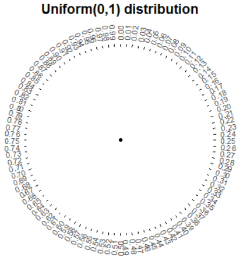
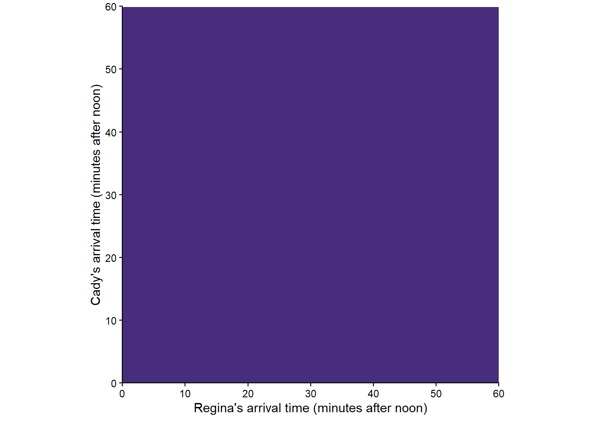
In the previous example, outcomes were measured on a continuous scale; any real number between 0 and 60 was a possible arrival time. In practice we might round the arrival time to the nearest minute or second, but in principle and with infinite precision any real number in the continuous interval \([0, 60]\) is possible.
Furthermore, even in situations where outcomes are inherently discrete, it is often more convenient to model them as continuous. For example, if an outcome represents the annual salary in dollars of a randomly selected U.S. household, it would be more convenient to model the sample space as the continuous interval6 \([0, \infty)\) rather than discrete intervals like \(\{0, 1, 2, \ldots\}\) or \(\{0, 0.01, 0.02, \ldots\}\). Continuous models are often more tractable mathematically than discrete models.
In the previous examples, the sample space could be defined rather explicitly, either by direct enumeration or using set notation (like a Cartesian product). However, explicitly defining a sample space in a compact way is often not possible, as in the following example.
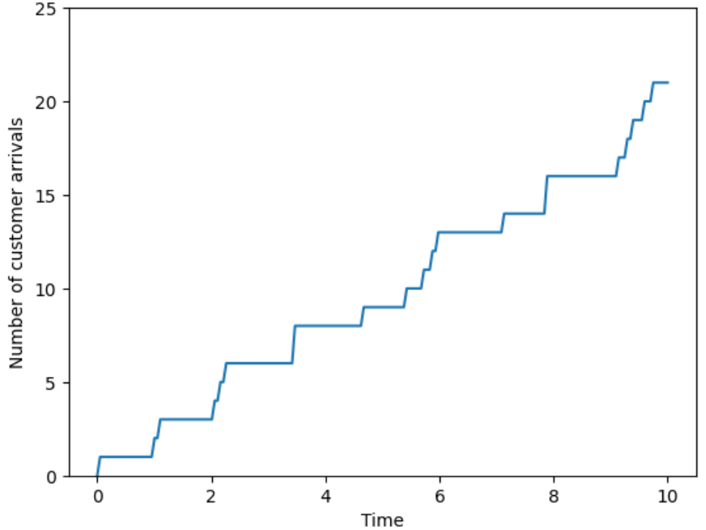
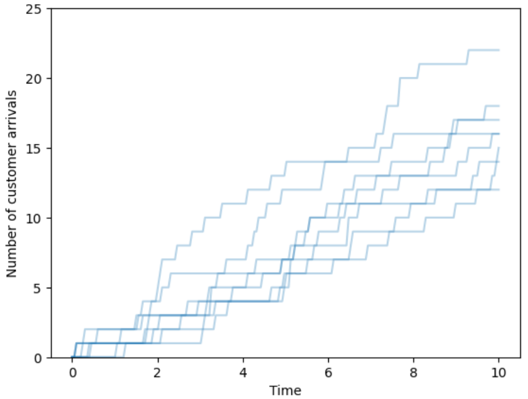
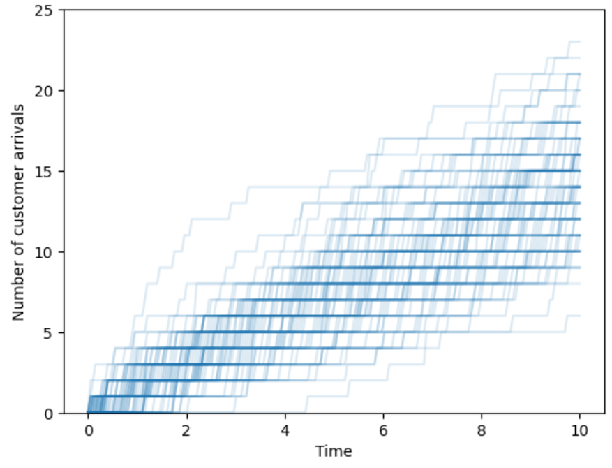
Any random phenomenon has a corresponding sample space but in some situations explicitly defining a outcome is not feasible. For example, suppose the random phenomenon is tomorrow’s weather. In order to describe an outcome, we need to specify (among other things): temperature, atmospheric pressure, wind, humidity, precipitation, and cloudiness, and how it all evolves over over the course of tomorrow, possibly in multiple locations. Representing all of this information in a compact way to define even just one outcome is virtually impossible; explicitly defining a sample space of all possible outcomes is hopeless. Regardless, the sample space is still there in the background whether we specify it or not.
Even though the sample space often is at best vaguely defined (“tomorrow’s weather”) and plays a background role, it is important to first consider what is possible before determining how probable events are. The sample space essentially defines the denominator in probability calculations. In particular, considering the sample space can help distinguish between “the particular and the general” (as discussed in Section 1.6).
2.1.1 Counting outcomes
When there are finitely many possibilities, we can ask: how many possible outcomes are there? In Example 2.1 and Example 2.2 we counted outcomes by enumerating them in a list. Of course, listing all the outcomes is unfeasible unless the sample space is very small. Now we’ll see a simple principle that can be applied to count outcomes.
All of the counting rules we will see are based on multiplying like in Example 2.6.
Lemma 2.1 (Multiplication principle for counting) Suppose that stage 1 of a process can be completed in any one of \(n_1\) ways. Further, suppose that for each way of completing the stage 1, stage 2 can be completed in any one of \(n_2\) ways. Then the two-stage process can be completed in any one of \(n_1\times n_2\) ways. This rule extends naturally to a \(\ell\)-stage process, which can then be completed in any one of \(n_1\times n_2\times n_3\times\cdots\times n_\ell\) ways.
In the multiplication principle it is not important whether there is a “first” or “second” stage. What is important is that there are distinct stages, each with its own number of “choices”. In Example 2.6, there was a bowl/cone stage, an ice cream flavor stage, and a sprinkle stage; it didn’t matter if the flavor was chosen first or second or third.
We can use the multiplication principle to verify the total number of possible outcomes for a few of our previous examples. In Example 2.1 an outcome is a pair (first roll, second roll). There are 4 possibilities for the first roll and 4 for the second, so \(4\times4 = 16\) possible pairs. In Example 2.2 an outcome is an arrangement of the 4 outcomes in the 4 spots. There are 4 possibilities for the object placed in spot 1. After placing that object, there are 3 possibilities for spot 2, then 2 possibilities for spot 3, with one object left for spot 4. So there are \(4\times3\times2\times1 = 24\) possible arrangements.
The multiplication principle provides the foundation for some other counting rules we will see later.
2.1.2 Exercises
Exercise 2.1 Consider the outcome of a sequence of 4 flips of a coin.
- Without enumerating the sample space, determine the number of outcomes.
- Enumerate the sample space and confirm the number of outcomes.
- We might be interested in the number of flips that land on heads. Explain why it is still advantageous to define the sample space as in the previous part, rather than as \(\Omega=\{0, 1, 2, 3, 4\}\).
Exercise 2.2 The latest series of collectible Lego Minifigures contains 3 different Minifigure prizes (labeled 1, 2, 3). Each package contains a single unknown prize. Suppose we only buy 3 packages and we consider as our sample space outcome the results of just these 3 packages (prize in package 1, prize in package 2, prize in package 3). For example, 323 (or (3, 2, 3)) represents prize 3 in the first package, prize 2 in the second package, prize 3 in the third package.
- Without enumerating the sample space, determine the number of outcomes.
- Enumerate the sample space and confirm the number of outcomes.
2.2 Events
An event is something that might happen or might be true. For example, if we’re interested in the weather conditions in our city tomorrow, events include
- it rains
- it does not rain
- the high temperature is 75°F (rounded to the nearest °F)
- the high temperature is above 75°F
- it rains and the high temperature is above 75°F
- it does not rain or the high temperature is not above 75°F
There are many possible outcomes for tomorrow’s weather, but each of the above will be true only for certain outcomes.
Definition 2.2 An event is a subset of the sample space. An event represents a collection of outcomes that some criteria.
The sample space is the collection of all possible outcomes; an event represents only those outcomes which satisfy some criteria. Events are typically denoted with capital letters near the start of the alphabet, with or without subscripts (e.g. \(A\), \(B\), \(C\), \(A_1\), \(A_2\)).
Mathematically, events are sets, so events can be composed from others using basic set operations like unions (\(A\cup B\)), intersections (\(A \cap B\)), and complements (\(A^c\)).
- Complements. Read \(A^c\) as “not \(A\)”, the outcomes that do not satisfy \(A\)
- Intersections. Read \(A\cap B\) as “\(A\) and \(B\)”, the outcomes that satisfy both \(A\) and \(B\)
- Unions. Read \(A \cup B\) as “\(A\) or \(B\)”, the outcomes that satisfy \(A\) or \(B\). Unions (\(\cup\), “or”) are always inclusive: \(A\cup B\) occurs if \(A\) occurs but \(B\) does not, \(B\) occurs but \(A\) does not, or both \(A\) and \(B\) occur. Note that the complement of a union is the intersection of the complements, and vice versa: \((A \cup B)^c = A^c \cap B^c\) and \((A \cap B)^c = A^c \cup B^c\),
In the weather example above we can write
- \(A\): it rains
- \(B=A^c\): it does not rain
- \(C\): the high temperature is 75°F (rounded to the nearest °F)
- \(D\): the high temperature is above 75°F
- \(E = A \cap D\): it rains and the high temperature is above 75°F
- \(F = A^c \cup D^c = (A\cap D)^c = B\cap D^c = E^c\): it does not rain or the high temperature is not above 75°F
| Team | Conference | Championships | Wins | PPG | FG3 | FG3A | FG2 | FG2A | FT | FTA |
|---|---|---|---|---|---|---|---|---|---|---|
| Detroit Pistons | Eastern | 3 | 17 | 110.3 | 11.4 | 32.4 | 28.2 | 54.6 | 19.8 | 25.7 |
| Houston Rockets | Western | 2 | 22 | 110.7 | 10.4 | 31.9 | 30.2 | 56.9 | 19.1 | 25.3 |
| San Antonio Spurs | Western | 5 | 22 | 113.0 | 11.1 | 32.2 | 32.0 | 60.4 | 15.8 | 21.2 |
| Charlotte Hornets | Eastern | 0 | 27 | 111.0 | 10.7 | 32.5 | 30.5 | 57.9 | 17.6 | 23.6 |
| Portland Trail Blazers | Western | 1 | 33 | 113.4 | 12.9 | 35.3 | 27.6 | 50.1 | 19.6 | 24.6 |
| Orlando Magic | Eastern | 0 | 34 | 111.4 | 10.8 | 31.1 | 29.8 | 55.2 | 19.6 | 25.0 |
| Indiana Pacers | Eastern | 0 | 35 | 116.3 | 13.6 | 37.0 | 28.4 | 52.6 | 18.7 | 23.7 |
| Washington Wizards | Eastern | 1 | 35 | 113.2 | 11.3 | 31.7 | 30.9 | 55.2 | 17.6 | 22.4 |
| Utah Jazz | Western | 0 | 37 | 117.1 | 13.3 | 37.8 | 29.2 | 52.0 | 18.7 | 23.8 |
| Dallas Mavericks | Western | 1 | 38 | 114.2 | 15.2 | 41.0 | 24.8 | 43.3 | 19.0 | 25.1 |
| Chicago Bulls | Eastern | 6 | 40 | 113.1 | 10.4 | 28.9 | 32.1 | 57.9 | 17.6 | 21.8 |
| Oklahoma City Thunder | Western | 1 | 40 | 117.5 | 12.1 | 34.1 | 31.0 | 58.5 | 19.2 | 23.7 |
| Toronto Raptors | Eastern | 1 | 41 | 112.9 | 10.7 | 32.0 | 31.1 | 59.3 | 18.4 | 23.4 |
| New Orleans Pelicans | Western | 0 | 42 | 114.4 | 11.0 | 30.1 | 31.1 | 57.5 | 19.3 | 24.4 |
In Example 2.8 notice that we ony said the winner was determined “at random”; we didn’t mention how. “At random” only implies that the winning team will be selected in a manner that involves uncertainly. “At random” does not necessarily imply that the 14 teams are equally likely. In fact, the 2023 NBA Draft Lottery was weighted to give teams with fewer wins the previous season a greater probability of winning the top pick. We’ll return to this idea later. For now, we’re just defining some events that are possible; later we will consider how probable they are.
If the outcomes of a sample space are represented by rows in a table, then events are subsets of rows which satisfy some criteria.
| First roll | Second roll | Sum is 4? |
|---|---|---|
| 1 | 1 | no |
| 1 | 2 | no |
| 1 | 3 | yes |
| 1 | 4 | no |
| 2 | 1 | no |
| 2 | 2 | yes |
| 2 | 3 | no |
| 2 | 4 | no |
| 3 | 1 | yes |
| 3 | 2 | no |
| 3 | 3 | no |
| 3 | 4 | no |
| 4 | 1 | no |
| 4 | 2 | no |
| 4 | 3 | no |
| 4 | 4 | no |
We reiterate (again!) that there is a single sample space, upon which all events are defined. In the above example, events that involved only the first or second roll such as \(D\) and \(E\) were still defined in terms of pairs of rolls. An outcome in a sample space should be defined to record as much information as possible so that the occurrence or non-occurrence of all events of interest can be determined.
Some events consist of a single outcome, or no outcomes at all (the “empty set” denoted \(\{\}\) or \(\emptyset\)).
Definition 2.3 Events \(A_1, A_2. A_3, \ldots\) are disjoint (a.k.a. mutually exclusive) if none of the events have any outcomes in common; that is, if \(A_i \cap A_j = \emptyset\) for all \(i\neq j\).
Roughly, disjoint events do not “overlap”. In Example 2.9, events \(B\) and \(C\) are disjoint since \(B \cap C = \emptyset\); there are no outcomes for which both the sum of the dice is at most 3 and the larger roll is a 3.
| Spot 1 | Spot 2 | Spot 3 | Spot 4 | Object 3 in spot 3? |
|---|---|---|---|---|
| 1 | 2 | 3 | 4 | yes |
| 1 | 2 | 4 | 3 | no |
| 1 | 3 | 2 | 4 | no |
| 1 | 3 | 4 | 2 | no |
| 1 | 4 | 2 | 3 | no |
| 1 | 4 | 3 | 2 | yes |
| 2 | 1 | 3 | 4 | yes |
| 2 | 1 | 4 | 3 | no |
| 2 | 3 | 1 | 4 | no |
| 2 | 3 | 4 | 1 | no |
| 2 | 4 | 1 | 3 | no |
| 2 | 4 | 3 | 1 | yes |
| 3 | 1 | 2 | 4 | no |
| 3 | 1 | 4 | 2 | no |
| 3 | 2 | 1 | 4 | no |
| 3 | 2 | 4 | 1 | no |
| 3 | 4 | 1 | 2 | no |
| 3 | 4 | 2 | 1 | no |
| 4 | 1 | 2 | 3 | no |
| 4 | 1 | 3 | 2 | yes |
| 4 | 2 | 1 | 3 | no |
| 4 | 2 | 3 | 1 | yes |
| 4 | 3 | 1 | 2 | no |
| 4 | 3 | 2 | 1 | no |
We can use the multiplication principle to count the number of outcomes that satisfy event \(A_3\) in Table 2.5. If object 3 is in spot 3, there are 3 objects that can go in spot 1, then 2 that can go in spot 2, leaving 1 for spot 4; for a total of \(3\times2\times1\times1=6\) of the 24 outcomes which satisfy event \(A_3\).
When more than just a few events are of interest, subscripts are commonly used to identify different events. In the previous example, we might also be interested in \(A_1\), the event that object 1 is placed in spot 1; \(A_2\), the event that object 2 is placed in spot 2; and so on.
Remember that intervals of real numbers such as \((a,b), [a,b], (a,b]\) are also sets, and so can also be events. For example, if an outcome is the result of a single spin of the spinner in Figure 2.1, events include
- \([0, 0.5]\), the result is between 0 and 0.5 (the needle lands in the right half of the spinner)
- \([0.75, 1]\), the result is between 0.75 and 1 (the needle lands in the northwest quarter of the spinner)
- \([0.595, 0.605)\), the result rounded to two decimal places is 0.60
- \(\{0.6\}\), the result is 0.6 exactly (the needle points exactly at 0.60000000\(\ldots\))
It is often helpful to conceptualize and visualize events (sets) with pictures, especially when dealing with continuous sample spaces.
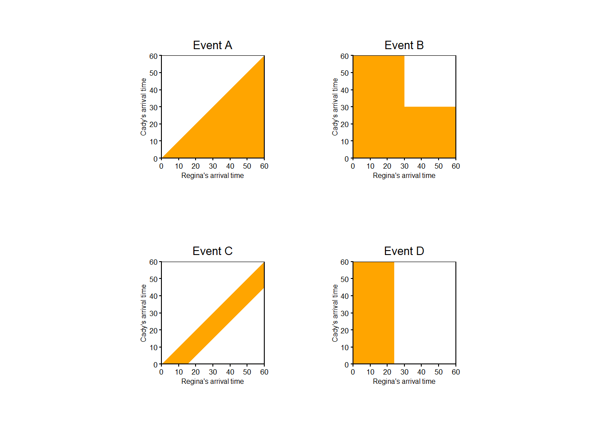
In Example 2.11 the sample space consists of (Regina, Cady) pairs of arrival times so any event must be expressed as a collection of pairs. Even though the criteria for event \(D\) involves only Regina’s arrival time, the event is not simply [0, 24]; we need to consider all (Regina, Cady) pairs for which the Regina component is in the interval [0, 24].
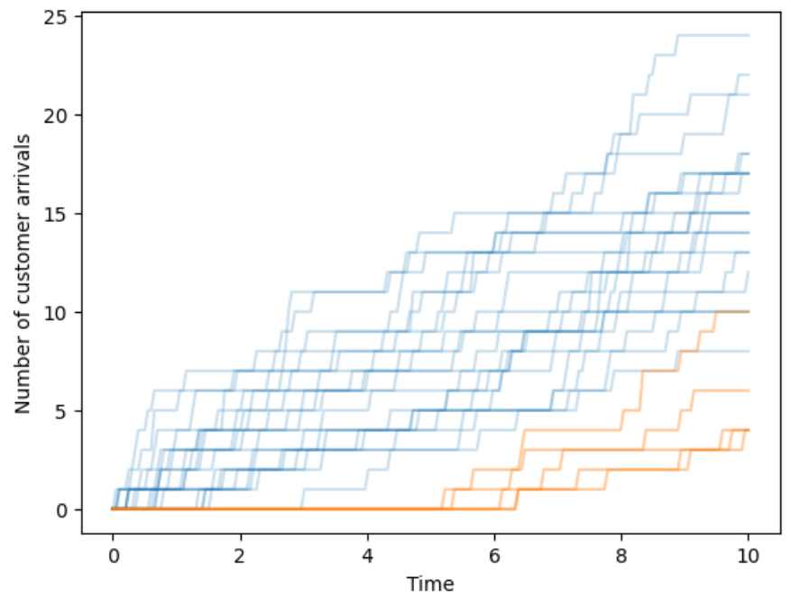
In many situations it is not possible to explicitly define a sample space in a compact way, and so outcomes and events are often only vaguely defined. Nevertheless, there is always a sample space in the background representing possible outcomes, and collections of these outcomes represent events of interest.
2.2.1 The collection of events of interest
An outcome is a possible realization of a random phenomenon. The sample space is the set of all possible outcomes. An event is a subset of the space space consisting of outcomes that satisfy some criteria. There are many events of interest for any random phenomenon. The collection of all events of interest is often denoted \(\mathcal{F}\).
An event \(A\) is a set. The collection \(\mathcal{F}\) of events of interest is a collection of sets. For the purposes of this text, \(\mathcal{F}\) can be considered to be the set of all subsets9 of \(\Omega\).
As an example, consider a single roll of a four-sided die.
| Event | Description | Occurs upon observing outcome \(\omega=3\)? |
|---|---|---|
| \(\emptyset\) | Roll nothing (not possible) | No |
| \(\{1\}\) | Roll a 1 | No |
| \(\{2\}\) | Roll a 2 | No |
| \(\{3\}\) | Roll a 3 | Yes |
| \(\{4\}\) | Roll a 4 | No |
| \(\{1, 2\}\) | Roll a 1 or a 2 | No |
| \(\{1, 3\}\) | Roll a 1 or a 3 | Yes |
| \(\{1, 4\}\) | Roll a 1 or a 4 | No |
| \(\{2, 3\}\) | Roll a 2 or a 3 | Yes |
| \(\{2, 4\}\) | Roll a 2 or a 4 | No |
| \(\{3, 4\}\) | Roll a 3 or a 4 | Yes |
| \(\{1, 2, 3\}\) | Roll a 1, 2, or 3 (a.k.a. do not roll a 4) | Yes |
| \(\{1, 2, 4\}\) | Roll a 1, 2, or 4 (a.k.a. do not roll a 3) | No |
| \(\{1, 3, 4\}\) | Roll a 1, 3, or 4 (a.k.a. do not roll a 2) | Yes |
| \(\{2, 3, 4\}\) | Roll a 2, 3, or 4 (a.k.a. do not roll a 1) | Yes |
| \(\{1, 2, 3, 4\}\) | Roll something | Yes |
A random phenomenon corresponds to a single sample space, but there are many events of interest. Listing the collection of all possible events as in the previous table is rarely done in practice, but we do so here to provide a concrete example of \(\mathcal{F}\).
2.2.2 Exercises
Exercise 2.3 The latest series of collectible Lego Minifigures contains 3 different Minifigure prizes (labeled 1, 2, 3). Each package contains a single unknown prize. Suppose we only buy 3 packages and we consider as our sample space outcome the results of just these 3 packages (prize in package 1, prize in package 2, prize in package 3). For example, 323 (or (3, 2, 3)) represents prize 3 in the first package, prize 2 in the second package, prize 3 in the third package.
- Let \(A_1\) be the event that prize 1 is obtained—that is, at least one of the packages contains prize 1—and define \(A_2, A_3\) similarly for prize 2, 3.
- Let \(B_1\) be the event that only prize 1 is obtained—that is, all three packages contain prize 1—and define \(B_2, B_3\) similarly for prize 2, 3.
Identify the following events as sets and interpret them in words
- \(A_1\) (hint: define \(A_1^c\) first)
- \(B_1\)
- \(A_1 \cap A_2 \cap A_3\)
- \(A_1 \cup A_2 \cup A_3\)
- \(B_1 \cap B_2 \cap B_3\)
- \(B_1 \cup B_2 \cup B_3\)
Exercise 2.4 Katniss throws a dart at a circular dartboard with radius 1 foot. (Assume that Katniss’s dart never misses the dartboard.)
Draw a picture to represent each of these events.
- \(A\), Katniss’s dart lands within 1 inch of the center of the dartboard.
- \(B\), Katniss’s dart lands more than 1 inch but less than 2 inches away from the center of the dartboard.
- \(E\), Katniss’s dart lands within 1 inch of the outside edge of the dartboard.
2.3 Random variables
Statisticians use the terms observational unit and variable. Observational units are the people, places, things, etc., for which data is observed. Variables are the measurements made on the observational units. For example, the observational units in a study could be college students, while variables could be age, high college GPA, major GPA, number of credits completed, number of Statistics courses taken, etc.
In probability, an outcome of a random phenomenon plays a role analogous to an observational unit in statistics. The sample space of outcomes is often only vaguely defined. In many situations we are less interested in detailing the outcomes themselves and more interested in whether or not certain events occur, or with measurements that we can make for the outcomes. For example, if the random phenomenon corresponds to randomly selecting a single student at a college an outcome would be the selected student, but we are more interested in quantities like the student’s GPA or number of credits completed. If we randomly select a sample of students, we are less interested in who the students are, and more interested in questions which involve variables such as what is the relationship between college GPA and major GPA? In probability, random variables play a role analogous to variables in statistics.
Definition 2.4 A random variable assigns a number measuring some quantity of interest to each outcome of a random phenomenon. That is, a random variable is a function that takes an outcome in the sample space as input and returns a number as output.
If we’re interested in the weather conditions in our city tomorrow, random variables include
- high temperature (°F)
- amount of precipitation (cm)
- humidity (%)
- maximum wind speed (mph)
Each of these quantities will take a value that depends on tomorrow’s weather conditions. Since there are a range of possibilities for tomorrow’s weather conditions, there is a range of values that each of these random variables can take.
Random variables are typically denoted by capital letters near the end of the alphabet, with or without subscripts: e.g. \(X\), \(Y\), \(Z\), or \(X_1\), \(X_2\), \(X_3\), etc.
A random variable is “variable” in the sense that it can take different values—that is, it can vary—and the value it takes is uncertain—that is, “random”.
In statistics, data is often stored in a spreadsheet or data table with rows corresponding to observational units and columns to variables. Likewise, in probability it helps to visualize a table with rows corresponding to outcomes and columns to random variables. Each outcome is associated with a value of the random variable. Since the outcome is uncertain, the value the random variable takes is also uncertain.
| Outcome (First roll, second roll) | X (sum) | Y (max) |
|---|---|---|
| (1, 1) | 2 | 1 |
| (1, 2) | 3 | 2 |
| (1, 3) | 4 | 3 |
| (1, 4) | 5 | 4 |
| (2, 1) | 3 | 2 |
| (2, 2) | 4 | 2 |
| (2, 3) | 5 | 3 |
| (2, 4) | 6 | 4 |
| (3, 1) | 4 | 3 |
| (3, 2) | 5 | 3 |
| (3, 3) | 6 | 3 |
| (3, 4) | 7 | 4 |
| (4, 1) | 5 | 4 |
| (4, 2) | 6 | 4 |
| (4, 3) | 7 | 4 |
| (4, 4) | 8 | 4 |
Mathematically, a random variable \(X\) is a function that takes an outcome \(\omega\) in the sample space \(\Omega\) as input and returns a number \(X(\omega)\) as output; we write \(X:\Omega\mapsto \mathbb{R}\). The random variable itself is typically denoted with a capital letter (\(X\)); possible values of that random variable are denoted with lower case letters (\(x\)). Think of the capital letter \(X\) as a label standing in for a formula like “the sum of two rolls of a four-sided die” and \(x\) as a dummy variable standing in for a particular value like 3.
In Example 2.17, the pair \((X, Y)\) is a random vector10. The output of each of \(X\) and \(Y\) is a number; the output of \((X, Y)\) is an ordered pair of numbers. A random vector is simply a vector of random variables.
One of the main reasons for modeling a sample space as the set of possible outcomes rather than the set of all possible values of some random variable is that we often want to define many random variables on the same sample space, and study relationships between them. As a statistics analogy, you would not be able to study the relationship between college GPA and major GPA unless you measured both variables for the same set of students.
2.3.1 Types of random variables
There are two main types of random variables.
- Discrete random variables take at most countably many possible values (e.g., \(0, 1, 2, \ldots\)). They are often counting variables (e.g., the number of coin flips that land on heads).
- Continuous random variables can take any real value in some interval (e.g., \([0, 1]\), \([0,\infty)\), \((-\infty, \infty)\).). That is, continuous random variables can take uncountably many different values. Continuous random variables are often measurement variables (e.g., height, weight, income).
In some problems, there are many random variables of interest, as in the following example.
2.3.2 A random variable is a function
Recall that for a mathematical function11 \(g\), given an input \(u\), the function returns a real number \(g(u)\). For example, if \(g\) is the square root function, \(g(u) = \sqrt{u}\), then \(g(9) = 3\) and \(g(10) = 3.162278...\). If the input comes from some set \(S\) (i.e. \(u\in S\)), we write \(g:S\mapsto \mathbb{R}\).
A random variable \(X\) is a function which maps each outcome \(\omega\) in the sample space \(\Omega\) to a real number \(X(\omega)\); \(X:\Omega\mapsto\mathbb{R}\). For a single outcome \(\omega\), the value \(x = X(\omega)\) is a single number; notice that \(x\) represents the output of the function \(X\) rather than the input. However, it is important to remember that the random variable \(X\) itself is a function, and not a single number.
You are probably familiar with functions expressed as simple closed form formulas of their inputs: \(g(u)=5u\), \(g(u)=u^2\), \(g(u)=\log u\), etc. While any random variable is some function, the function is rarely specified as an explicit mathematical formula of its input \(\omega\). Often, outcomes are not even numbers (e.g., sequences of coin flips), or only vaguely specified if at all (e.g., tomorrow’s weather conditions). In Example 2.17 we defined \(X\) through the words “sum of two rolls of a fair four-sided dice” instead of as a formula12.
It is more appropriate to think of a random variable as a function in the sense of a scale at a grocery store which maps a fruit to its weight, \(X: \text{fruit}\mapsto\text{weight}\). Put an apple on the scale and the scale returns a number, \(X(\text{apple})\), the weight of the apple. Likewise, \(X(\text{orange})\), \(X(\text{banana})\). The random variable \(X\) is the scale itself. This simplistic analogy assumes a sample space outcome is a single fruit. Of course, it’s even more complicated in reality since an outcome can be considered a set of fruits, so that we have for example \(X(\{\text{2 apples}, \text{3 oranges}\})\), and all fruits do not weigh the same, so that \(X(\text{this apple})\) is not the same as \(X(\text{that apple})\). But the idea is that a function is like a scale, with an input (fruits) and an output (weight). The input does not have to be a number, but the output does.
Suppose I’m going to randomly select some fruits, put them in a brown grocery bag, and place it on the scale. It wouldn’t be feasible to enumerate all the combinations of fruits I could put in the bag, but even so you know that any possible combination has some weight which could be measured by the scale. There is still a function (scale) that maps an input (fruits in the bag) to a numerical output (weight), even if that function is not explicitly specified with a mathematical formula. Now suppose I’ve selected some fruits and put the bag on the scale. Even if you can’t see what fruits are inside the bag, you can still read the weight off the scale. But even if you only observe the weight, you know there was still a background random process of putting fruits in a bag which resulted in a particular outcome having the observed weight.
The “weighing fruits in a bag” scenario in the previous paragraph illustrates how probability usually works:
- We typically don’t explicitly specify outcomes or the sample space, but we know that different outcomes can result in different values of random variables. That is, we know there is some function which maps outcomes of the random phenomenon to values of the random variable, even if we don’t have an explicit formula for the inputs to the function (sample space outcomes) or the function itself.
- We might not observe outcomes in full detail (e.g., tomorrow’s weather conditions), but we often can still observe values of random variables (e.g., tomorrow’s high temperature).
2.3.3 Tranformations of random variables
We are often interested in random variables that are derived from others. For example, if the random variable \(X\) represents the radius (cm) of a randomly selected circle, then \(Y = \pi X^2\) is a random variable representing the circle’s area (\(\text{cm}^2\)). If the random variables \(W\) and \(T\) represent the weight (kg) and height (m), respectively, of a randomly selected person, then \(S = W / T^2\) is a random variable representing the person’s body mass index (\(\text{kg}/\text{m}^2\)).
A function of a random variable is also a random variable. That is, if \(X\) is a random variable and \(g\) is a function, then \(Y=g(X)\) is also a random variable13. For example, if \(u\) is a radius of a circle, the function \(g(u) = \pi u^2\) outputs its area; if \(X\) is a random variable representing the radius of a randomly selected circle then \(Y = g(X)=\pi X^2\) is a random variable representing the circle’s area.
Sums and products, etc., of random variables defined on the same sample space are random variables. That is, if random variables \(X\) and \(Y\) are defined on the same sample space then \(X+Y\), \(X-Y\), \(XY\), and \(X/Y\) are also random variables. Similarly, it is possible to make comparisons such as \(X\ge Y\) and apply other transformations for random variables defined on the same sample space.
| Team | $W$ | $X_3$ | $Y_3$ | $X_2$ | $Y_2$ | $X_1$ | $Y_1$ | $82-W$ | $W/82$ | $X_1/Y_1$ | $\frac{X_2+X_3}{Y_2+Y_3}$ | $\frac{Y_3}{Y_2+Y_3}$ | $3X_3 + 2X_2 + X_1$ |
|---|---|---|---|---|---|---|---|---|---|---|---|---|---|
| Detroit Pistons | 17 | 11.4 | 32.4 | 28.2 | 54.6 | 19.8 | 25.7 | 65 | 0.207 | 0.770 | 0.455 | 0.372 | 110.4 |
| Houston Rockets | 22 | 10.4 | 31.9 | 30.2 | 56.9 | 19.1 | 25.3 | 60 | 0.268 | 0.755 | 0.457 | 0.359 | 110.7 |
| San Antonio Spurs | 22 | 11.1 | 32.2 | 32.0 | 60.4 | 15.8 | 21.2 | 60 | 0.268 | 0.745 | 0.465 | 0.348 | 113.1 |
| Charlotte Hornets | 27 | 10.7 | 32.5 | 30.5 | 57.9 | 17.6 | 23.6 | 55 | 0.329 | 0.746 | 0.456 | 0.360 | 110.7 |
| Portland Trail Blazers | 33 | 12.9 | 35.3 | 27.6 | 50.1 | 19.6 | 24.6 | 49 | 0.402 | 0.797 | 0.474 | 0.413 | 113.5 |
| Orlando Magic | 34 | 10.8 | 31.1 | 29.8 | 55.2 | 19.6 | 25.0 | 48 | 0.415 | 0.784 | 0.470 | 0.360 | 111.6 |
| Indiana Pacers | 35 | 13.6 | 37.0 | 28.4 | 52.6 | 18.7 | 23.7 | 47 | 0.427 | 0.789 | 0.469 | 0.413 | 116.3 |
| Washington Wizards | 35 | 11.3 | 31.7 | 30.9 | 55.2 | 17.6 | 22.4 | 47 | 0.427 | 0.786 | 0.486 | 0.365 | 113.3 |
| Utah Jazz | 37 | 13.3 | 37.8 | 29.2 | 52.0 | 18.7 | 23.8 | 45 | 0.451 | 0.786 | 0.473 | 0.421 | 117.0 |
| Dallas Mavericks | 38 | 15.2 | 41.0 | 24.8 | 43.3 | 19.0 | 25.1 | 44 | 0.463 | 0.757 | 0.474 | 0.486 | 114.2 |
| Chicago Bulls | 40 | 10.4 | 28.9 | 32.1 | 57.9 | 17.6 | 21.8 | 42 | 0.488 | 0.807 | 0.490 | 0.333 | 113.0 |
| Oklahoma City Thunder | 40 | 12.1 | 34.1 | 31.0 | 58.5 | 19.2 | 23.7 | 42 | 0.488 | 0.810 | 0.465 | 0.368 | 117.5 |
| Toronto Raptors | 41 | 10.7 | 32.0 | 31.1 | 59.3 | 18.4 | 23.4 | 41 | 0.500 | 0.786 | 0.458 | 0.350 | 112.7 |
| New Orleans Pelicans | 42 | 11.0 | 30.1 | 31.1 | 57.5 | 19.3 | 24.4 | 40 | 0.512 | 0.791 | 0.481 | 0.344 | 114.5 |
Remember that we can visualize outcomes as rows in a spreadsheet with random variables as columns. Random variables defined on the same sample space can be put in a single spreadsheet. Each row corresponds to an outcome, and reading across any row there is a value in the column corresponding to each random variable. Random variables derived from transformations of other random variables append columns to the spreadsheet. New random variables can be defined by going row-by-row, outcome-by-outcome, and applying a transformation within each row to the values of other random variables.
Using capital letters like \(X\) or \(Y\) to denote random variables is standard practice. To help develop comfort with this mathematical notation, we will often label columns in tables with their random variable symbols (as we did in Table 2.8). Later, when writing code we will often denote random variables with symbols like X or Y. However, keep in mind that mathematical symbols like \(X\) or \(Y\) represent variables in a context. While you should develop comfort with the notation, you can—and probably should—use more informative labels like “wins” or wins rather than \(W\).
2.3.4 Indicator random variables
Random variables that only take two possible values, 0 and 1, have a special name.
Definition 2.5 An indicator (a.k.a., Bernoulli, a.k.a. Boolean) random variable can take only the values 0 or 1. If \(A\) is an event then the corresponding indicator random variable \(\textrm{I}_A\) is defined as \[ \textrm{I}_A(\omega) = \begin{cases} 1, & \omega \in A,\\ 0, & \omega \notin A \end{cases} \] That is, \(\textrm{I}_A\) equals 1 if event \(A\) occurs, and \(\textrm{I}_A\) equals 0 if event \(A\) does not occur.
Indicators provide the bridge between events (sets) and random variables (functions). Any event either occurs or not; a realization of any event is either true (\(\omega \in A\)) or false (\(\omega \notin A\)). An indicator random variable just translates “true” or “false” into numbers, 1 for “true” and 0 for “false”.
| Outcome | $X$ | $I_1$ | $I_2$ | $I_3$ | $I_4$ |
|---|---|---|---|---|---|
| 1234 | 4 | 1 | 1 | 1 | 1 |
| 1243 | 2 | 1 | 1 | 0 | 0 |
| 1324 | 2 | 1 | 0 | 0 | 1 |
| 1342 | 1 | 1 | 0 | 0 | 0 |
| 1423 | 1 | 1 | 0 | 0 | 0 |
| 1432 | 2 | 1 | 0 | 1 | 0 |
| 2134 | 2 | 0 | 0 | 1 | 1 |
| 2143 | 0 | 0 | 0 | 0 | 0 |
| 2314 | 1 | 0 | 0 | 0 | 1 |
| 2341 | 0 | 0 | 0 | 0 | 0 |
| 2413 | 0 | 0 | 0 | 0 | 0 |
| 2431 | 1 | 0 | 0 | 1 | 0 |
| 3124 | 1 | 0 | 0 | 0 | 1 |
| 3142 | 0 | 0 | 0 | 0 | 0 |
| 3214 | 2 | 0 | 1 | 0 | 1 |
| 3241 | 1 | 0 | 1 | 0 | 0 |
| 3412 | 0 | 0 | 0 | 0 | 0 |
| 3421 | 0 | 0 | 0 | 0 | 0 |
| 4123 | 0 | 0 | 0 | 0 | 0 |
| 4132 | 1 | 0 | 0 | 1 | 0 |
| 4213 | 1 | 0 | 1 | 0 | 0 |
| 4231 | 2 | 0 | 1 | 1 | 0 |
| 4312 | 0 | 0 | 0 | 0 | 0 |
| 4321 | 0 | 0 | 0 | 0 | 0 |
Even though they seem simple, indicator random variables are very useful. In the matching problem, it is not feasible to enumerate the outcomes and count when there is a large number \(n\) of items and spots. Using indicators allows you to count incrementally—is just this item in the correct spot?— rather than all at once. Representing a count as a sum of indicator random variables is a very common and useful strategy, especially in problems that involve “find the expected number of…”
Here is a little story that illustrates the idea of incremental counting with indicators. Imagine a dad and his young child are reading a picture book. They come to a page that has twenty pictures of fruits, of which seven are bananas. The following conversation ensues.
- Dad: Can you count all the bananas? Let’s see! How many bananas have we counted so far?
- Kid: We haven’t started counting yet!
- Dad: Right, so how many bananas have we counted so far?
- Kid: Zero.
- Dad: That’s right! We’ve counted zero bananas so far. (Dad points to a banana.) Is that a banana?
- Kid: Yes!
- Dad: So how many more bananas did we just count?
- Kid: One more.
- Dad: So how many bananas have we counted so far?
- Kid: One.
- Dad: Great job! We’ve counted one banana so far. (Dad points to a different banana.) Is that a banana?
- Kid: Yes!
- Dad: So how many more bananas did we just count?
- Kid: We counted one more banana.
- Dad: So how many bananas have we counted so far?
- Kid: Two.
- Dad: Great job! We’ve counted two bananas so far. (Dad points to a different banana.) Is that a banana?
- Kid: Yes!
- Dad: So how many more bananas did we just count?
- Kid: We counted one more banana.
- Dad: So how many bananas have we counted so far?
- Kid: Three.
- Dad: Great job! We’ve counted three bananas so far. (Dad points to an orange14.) Is that a banana?
- Kid: No, that’s an orange!
- Dad: So how many more bananas did we just count?
- Kid: Zero. It was not a banana!
- Dad: So how many bananas have we counted so far?
- Kid: Still three.
- Dad: Great job! We’ve counted three bananas so far. (Continues in this manner until Dad points to the twentieth and last fruit on the page, a banana.) Almost done. We’ve counted six bananas so far. Is that a banana?
- Kid: Yes!
- Dad: So how many more bananas did we just count?
- Kid: We counted one more banana.
- Dad: So how many bananas have we counted so far?
- Kid: Seven.
- Dad: We looked at each fruit on the page. How many were bananas?
- Kid: Seven.
- Dad: Great job! Now you know how indicator random variables can be used to count.
In the story, the kid counted the bananas by examining each object, determining whether or not it was a banana, and then incrementing the banana counter by 1 for each object that was a banana (and by 0 for the objects that were not bananas). The kid essentially created an indicator (of “banana”) variable for each object on the page (\(I_{B_1}=1\), \(I_{B_2}=1\), \(I_{B_3}=1\), \(I_{B_4}=0\ldots\), \(I_{B_{20}}=1\)) and then summed these indicators to obtain the total count of bananas. This strategy gives a way of breaking down a complicated counting problem into smaller pieces and counting incrementally.
Example 2.23 illustrates that for two events \(A\) and \(B\) \[\begin{align*} \textrm{I}_{A^c} & = 1 - \textrm{I}_A & & \\ \textrm{I}_{A \cap B} & = \textrm{I}_A \textrm{I}_B & & =\min(\textrm{I}_A, \textrm{I}_B)\\ \textrm{I}_{A \cup B} & = \textrm{I}_A + \textrm{I}_B - \textrm{I}_{A \cap B} & & = \max(I_A, I_B) \end{align*}\]
In particular, the indicator of an intersection is the product of the indicators of each event. The \(\min, \max\), and product formulas work for more than two events, but the addition formula is more complicated15.
2.3.5 Events involving random variables
Many events of interest involve random variables. The event “tomorrow’s high temperature is above 75°F” involves the random variable “tomorrow’s high temperature”. Each possible outcome of tomorrow’s weather conditions will correspond to a value of high temperature, but only some of these outcomes will result in values of high temperature above 75 °F.
The expressions \(X=x\) or \(\{X=x\}\) are shorthand for the event that the random variable \(X\) takes the value \(x\). Remember that any event is a collection of outcomes that satisfy some criteria, a subset of the sample space. So objects like \(\{X=x\}\) are sets representing the outcomes for which the value of the random variable \(X\) is equal to the number \(x\). Remember to think of the capital letter \(X\) as a label standing in for a formula like “the sum of two rolls of a four-sided die” and \(x\) as a dummy variable standing in for a particular value like 3.
| Outcome (First roll, second roll) | X (sum) | Y (max) |
|---|---|---|
| (1, 1) | 2 | 1 |
| (1, 2) | 3 | 2 |
| (1, 3) | 4 | 3 |
| (1, 4) | 5 | 4 |
| (2, 1) | 3 | 2 |
| (2, 2) | 4 | 2 |
| (2, 3) | 5 | 3 |
| (2, 4) | 6 | 4 |
| (3, 1) | 4 | 3 |
| (3, 2) | 5 | 3 |
| (3, 3) | 6 | 3 |
| (3, 4) | 7 | 4 |
| (4, 1) | 5 | 4 |
| (4, 2) | 6 | 4 |
| (4, 3) | 7 | 4 |
| (4, 4) | 8 | 4 |
When dealing with probabilities, it is common to write \(X=3\) instead of16 \(\{X=3\}\), and \(X = 4, Y = 3\) instead of \(\{X = 4\}\cap \{Y = 3\}\); read the comma in \(X = 4, Y = 3\) as “and”. But keep in mind that an expression like “\(X=3\)” really represents an event \(\{X=3\}\), a subset of outcomes of the sample space.
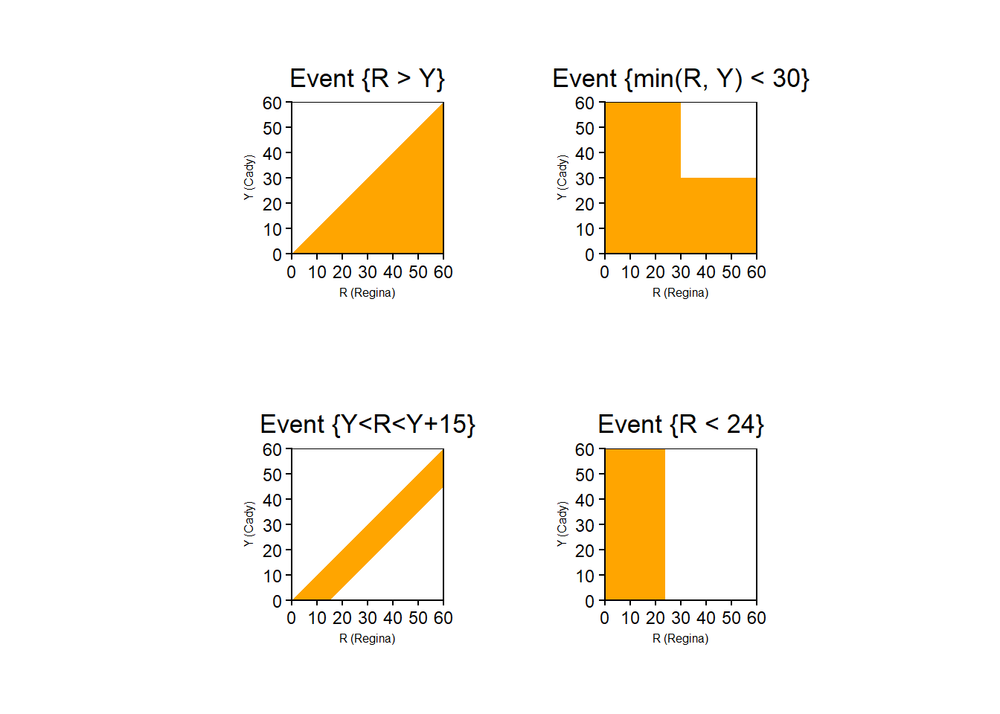
2.3.6 Outcomes, events, and random variables
Outcomes, events, and random variables are some of the main objects of probability. While they are related, these are distinct objects. Thinking in terms of a spreadsheet, an outcome is a row, an event is a subset of rows, and a random variable is a column. Mathematically, an outcome is a point, an event is a set, and a random variable is a function which outputs a number. As such, different operations are valid depending on what you’re dealing with. Don’t confuse operations like \(\cap\) that operate on sets (events, “and”) with operations like \(+\) that operate on numbers and functions (random variables, “plus” meaning addition).
2.3.7 Exercises
Exercise 2.5 Consider the outcome of a sequence of 4 flips of a coin. One random variable is \(X\), the number of heads flipped.
- Explain why \(X\) is a random variable.
- Evaluate each of the following: \(X(HHHH), X(HTHT), X(TTHH)\).
- Identify the possible values of \(X\). Why not let the sample space just consist of this set of possible values?
- What does \(4-X\) represent?
- What does \(X/4\) represent?
Exercise 2.6 The latest series of collectible Lego Minifigures contains 3 different Minifigure prizes (labeled 1, 2, 3). Each package contains a single unknown prize. Suppose we only buy 3 packages and we consider as our sample space outcome the results of just these 3 packages (prize in package 1, prize in package 2, prize in package 3). For example, 323 (or (3, 2, 3)) represents prize 3 in the first package, prize 2 in the second package, prize 3 in the third package. Let \(X\) be the number of distinct prizes obtained in these 3 packages. Let \(Y\) be the number of these 3 packages that contain prize 1.
The sample space consists of 27 outcomes, listed in the table below.
| 111 | 112 | 113 | 121 | 122 | 123 | 131 | 132 | 133 | |
| \(X\) | |||||||||
| \(Y\) | |||||||||
| 211 | 212 | 213 | 221 | 222 | 223 | 231 | 232 | 233 | |
| \(X\) | |||||||||
| \(Y\) | |||||||||
| 311 | 312 | 313 | 321 | 322 | 323 | 331 | 332 | 333 | |
| \(X\) | |||||||||
| \(Y\) |
- Use the table above and evaluate \(X\) and \(Y\) for each of the outcomes.
- Identify the possible values of \(X\).
- Identify the possible values of \(Y\).
- Identify the possible \((X, Y)\) pairs.
- Identify and interpret \(\{X = 1\}\).
- Identify and interpret \(\{X = 2\}\).
- Identify and interpret \(\{X = 3\}\).
- Identify and interpret \(\{Y = 0\}\).
- Identify and interpret \(\{Y = 1\}\).
- Identify and interpret \(\{Y = 2\}\).
- Identify and interpret \(\{Y = 3\}\).
- Identify and interpret \(\{X = 2, Y = 1\}\).
- Identify and interpret \(\{X = Y\}\).
- Let \(I_1\) be the indicator random variable that prize 1 is obtained (in at least one of the three packages). Identify and intepret \(\{I_1 = 0\}\).
- Let \(I_2\) be the indicator random variable that prize 2 is obtained (in at least one of the three packages), and similarly \(I_3\) for prize 3. What is the relationship between \(X\) and \(I_1, I_2, I_3\)?
- How can you write \(Y\) in terms of indicator random variables?
Exercise 2.7 Katniss throws a dart at a circular dartboard with radius 1 foot. (Assume that Katniss’s dart never misses the dartboard.) Let \(X\) be the distance (inches) from the location of the dart to the center of the dartboard.
- Identify (with a picture) and interpret \(\{X \le 1\}\)
- Identify (with a picture) and interpret \(\{1 < X < 2\}\)
- Identify (with a picture) and interpret \(\{X > 11\}\)
- Identify (with a picture) and interpret \(\{X = 0\}\)
- Identify (with a picture) and interpret \(\{X = 1\}\)
2.4 Probability spaces
In this chapter we have defined outcomes, events, and random variables, the main mathematical objects associated with a random phenomenon. But we haven’t actually computed any probabilities yet! So far we have only been concerned with what is possible. You might have noticed that the examples often did not include any assumptions like the “die is fair”, “each object is equally likely to be put in any spot”, or “Regina is more likely to arrive late and Cady is more likely to arrive early”. Now we will start to incorporate assumptions of the random phenomenon to determine how probable various events are.
2.4.1 Probability measures
As we saw in Section 1.3, there are some basic logical consistency requirements that probabilities must satisfy, which are formalized in three “axioms”.
Definition 2.6 A probability measure, typically denoted \(\textrm{P}\), assigns probabilities to events to quantify their relative likelihoods, plausibilities, or degrees of uncertainty according to the assumptions of the model of the random phenomenon. The probability of event17 \(A\) is denoted \(\textrm{P}(A)\).
Any valid probability measure must satisfy the following axioms.
- For any event \(A\), \(0 \le \textrm{P}(A) \le 1\).
- If \(\Omega\) represents the sample space then \(\textrm{P}(\Omega) = 1\).
- Countable additivity. If \(A_1, A_2, A_3, \ldots\) are disjoint events (recall Definition 2.3), then \[ \textrm{P}(A_1 \cup A_2 \cup A_2 \cup \cdots) = \textrm{P}(A_1) + \textrm{P}(A_2) +\textrm{P}(A_3) + \cdots \]
An event \(A\) is something that can happen or can be true; \(\textrm{P}(A)\) quantifies how likely it is that \(A\) will happen or how plausible it is that \(A\) is true. Probabilities are always defined for events (sets) but remember than many events are defined in terms of random variables. For example, if \(X\) is tomorrow’s high temperature (degrees F) we might be interested in \(\textrm{P}(\{X>80\})\), the probability of the event that tomorrow’s high temperature is above 80 degrees F. If \(Y\) is the amount of rainfall tomorrow (inches) we might be interested in \(\textrm{P}(\{X > 80\}\cap \{Y < 2\})\), the probability of the event that tomorrow’s high temperature is above 80 degrees F and the amount of rainfall is less than 2 inches. To simplify notation, it is common to write \(\textrm{P}(X>80)\) instead of \(\textrm{P}(\{X>80\})\), or \(\textrm{P}(X > 80, Y < 2)\) instead of \(\textrm{P}(\{X > 80\}\cap \{Y < 2\})\). Read the comma in \(\textrm{P}(X > 80, Y < 2)\) as “and”. But keep in mind that an expression like “\(X>80\)” really represents an event \(\{X>80\}\).
The three axioms require that probabilities of different events must fit together in a logically coherent way.
The requirement \(0\le \textrm{P}(A)\le 1\) makes sense in light of the relative frequency interpretation: an event \(A\) can not occur on more than 100% of repetitions or less than 0% of repetitions of the random phenomenon.
The requirement that \(\textrm{P}(\Omega)=1\) just ensures that the sample space accounts for all of the possible outcomes. Basically, \(\textrm{P}(\Omega)=1\) says that on any repetition of the random phenomenon, “something has to happen”. Roughly, \(\textrm{P}(\Omega)=1\) implies that all outcomes taken together need to account for 100% of the probability. If \(\textrm{P}(\Omega)\) were less than 1, then the sample space hasn’t accounted for all of the possible outcomes.
Event \(A_1 \cup A_2 \cup \cdots\) is the event that \(A_1\) occurs OR \(A_2\) occurs OR… In other words, \(A_1 \cup A_2 \cup \cdots\) is the event that at least one of the \(A_i\)’s occur. Countable additivity says that as long as events share no outcomes in common, then the probability that at least one of the events occurs is equal to the sum of the probabilities of the individual events. In Example 1.7, the events \(B\)=“the Braves win the 2023 World Series” and \(A\)=“the Rays win the 2023 World Series” are disjoint, \(A\cap B = \emptyset\); in a single World Series, both teams cannot win. If \(\textrm{P}(B) = 0.19\) and \(\textrm{P}(A) = 0.16\), then the probability of \(A\cup B\), the event that either the Rays or the Braves win, must be \(\textrm{P}(A\cup B)=0.29\).
Countable additivity can be understood through a diagram with areas representing probabilities, as in the figure below which represents two events (yellow / and blue \). On the left, there is no “overlap” between areas so the total area is the sum of the two pieces; this depicts countable additivity for two disjoint events. On the right, there is overlap between the two areas, so simply adding the two areas “double counts” the intersection (green \(\times\)) and does not result in the correct total area. Countable additivity applies to any countable number18 of events, as long as there is no “overlap”.
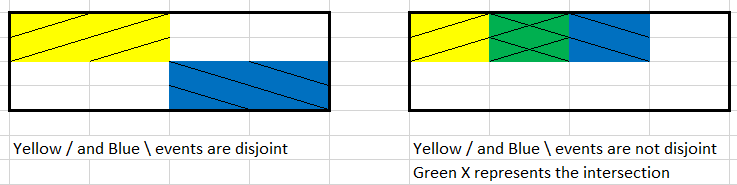
The three axioms of a probability measure are simply minimal logical consistency requirements that must be satisfied by any probability model to ensure that probabilities fit together in a coherent way. There are also many physical aspects of the random phenomenon or assumptions (e.g. “fairness”, independence, conditional relationships) that must be considered when determining a reasonable probability measure for a particular situation. Sometimes \(\textrm{P}(A)\) is defined explicitly for an event \(A\) via a formula. But it is much more common for a probability measure to be defined only implicitly through modeling assumptions; probabilities of events then follow from the axioms and related properties.
2.4.2 Some probability measures for a four-sided die
Consider a single roll of a four-sided die. The sample space consists of four possible outcomes, \(\Omega = \{1, 2, 3, 4\}\). Events concern what might happen on a single roll. For example, if \(A\) is the event that we roll an odd number then \(A = \{1, 3\}\); “roll an odd number” occurs if we roll a 1 so 1 is an \(A\), or “roll an odd number” occurs if we roll a 3 so 3 is in \(A\). Table 2.6 lists the collection of all events.
| Event | Description | Probability of event assuming a fair die |
|---|---|---|
| \(\emptyset\) | Roll nothing (not possible) | 0 |
| \(\{1\}\) | Roll a 1 | 1/4 |
| \(\{2\}\) | Roll a 2 | 1/4 |
| \(\{3\}\) | Roll a 3 | 1/4 |
| \(\{4\}\) | Roll a 4 | 1/4 |
| \(\{1, 2\}\) | Roll a 1 or a 2 | 2/4 |
| \(\{1, 3\}\) | Roll a 1 or a 3 | 2/4 |
| \(\{1, 4\}\) | Roll a 1 or a 4 | 2/4 |
| \(\{2, 3\}\) | Roll a 2 or a 3 | 2/4 |
| \(\{2, 4\}\) | Roll a 2 or a 4 | 2/4 |
| \(\{3, 4\}\) | Roll a 3 or a 4 | 2/4 |
| \(\{1, 2, 3\}\) | Roll a 1, 2, or 3 (a.k.a. do not roll a 4) | 3/4 |
| \(\{1, 2, 4\}\) | Roll a 1, 2, or 4 (a.k.a. do not roll a 3) | 3/4 |
| \(\{1, 3, 4\}\) | Roll a 1, 3, or 4 (a.k.a. do not roll a 2) | 3/4 |
| \(\{2, 3, 4\}\) | Roll a 2, 3, or 4 (a.k.a. do not roll a 1) | 3/4 |
| \(\{1, 2, 3, 4\}\) | Roll something | 1 |
When outcomes are equally likely, we find the probability of an event by counting the number of outcomes that satisfy the event.
The probability measure \(\textrm{P}\) in Example 2.28 satisfies all the axioms and so it is a valid probability measure. However, assuming that the outcomes are equally likely is a much stricter condition than the basic logical consistency requirements of the axioms. There are many other possible probability measures, like in the following.
| Event | Description | Probability of event assuming a particular weighted die |
|---|---|---|
| \(\emptyset\) | Roll nothing (not possible) | 0 |
| \(\{1\}\) | Roll a 1 | 0.1 |
| \(\{2\}\) | Roll a 2 | 0.2 |
| \(\{3\}\) | Roll a 3 | 0.3 |
| \(\{4\}\) | Roll a 4 | 0.4 |
| \(\{1, 2\}\) | Roll a 1 or a 2 | 0.3 |
| \(\{1, 3\}\) | Roll a 1 or a 3 | 0.4 |
| \(\{1, 4\}\) | Roll a 1 or a 4 | 0.5 |
| \(\{2, 3\}\) | Roll a 2 or a 3 | 0.5 |
| \(\{2, 4\}\) | Roll a 2 or a 4 | 0.6 |
| \(\{3, 4\}\) | Roll a 3 or a 4 | 0.7 |
| \(\{1, 2, 3\}\) | Roll a 1, 2, or 3 (a.k.a. do not roll a 4) | 0.6 |
| \(\{1, 2, 4\}\) | Roll a 1, 2, or 4 (a.k.a. do not roll a 3) | 0.7 |
| \(\{1, 3, 4\}\) | Roll a 1, 3, or 4 (a.k.a. do not roll a 2) | 0.8 |
| \(\{2, 3, 4\}\) | Roll a 2, 3, or 4 (a.k.a. do not roll a 1) | 0.9 |
| \(\{1, 2, 3, 4\}\) | Roll something | 1 |
The symbol \(\textrm{P}\) is more than just shorthand for the word “probability”. \(\textrm{P}\) denotes the underlying probability measure, which represents all the assumptions about the random phenomenon. Changing assumptions results in a change of the probability measure and a different probability model. We often consider several probability measures for the same sample space and collection of events; these several measures represent different sets of assumptions or available information and different probability models.
The probability measure \(\textrm{P}\) in Example 2.28 corresponds to the assumption of a fair die (equally likely outcomes). With this measure \(\textrm{P}(A) = 2/4=0.5\) for \(A = \{1, 3\}\). But under the probability measure \(\textrm{Q}\) corresponding to the weighted die in Example 2.29, \(\textrm{Q}(A) = 0.4\). The outcomes and events are the same in both scenarios, because both scenarios involve a four sided-die. What is different is the probability measure that assigns probabilities to the events. One scenario assumes the die is fair while the other assumes the die has a particular weighting, resulting in two different probability measures.
Both probability measures \(\textrm{P}\) and \(\textrm{Q}\) can be written as explicit set functions: for an event \(A\)
\[\begin{align*} \textrm{P}(A) & = \frac{\text{number of outcomes that satisfy $A$}}{4}, & & {\text{a fair four-sided die}} \\ \textrm{Q}(A) & = \frac{\text{sum of elements in $A$}}{10}, & & {\text{a specific weighted four-sided die}} \end{align*}\]
We provide the above descriptions to illustrate that a probability measure operates on sets. However, in many situations there does not exist a simple closed form expression for the set function defining the probability measure which maps events to probabilities.
| Event | Description | Probability of event assuming a particular weighted die |
|---|---|---|
| \(\emptyset\) | Roll nothing (not possible) | 0 |
| \(\{1\}\) | Roll a 1 | 4/15 |
| \(\{2\}\) | Roll a 2 | 6/15 |
| \(\{3\}\) | Roll a 3 | 3/15 |
| \(\{4\}\) | Roll a 4 | 2/15 |
| \(\{1, 2\}\) | Roll a 1 or a 2 | 10/15 |
| \(\{1, 3\}\) | Roll a 1 or a 3 | 7/15 |
| \(\{1, 4\}\) | Roll a 1 or a 4 | 6/15 |
| \(\{2, 3\}\) | Roll a 2 or a 3 | 9/15 |
| \(\{2, 4\}\) | Roll a 2 or a 4 | 8/15 |
| \(\{3, 4\}\) | Roll a 3 or a 4 | 5/15 |
| \(\{1, 2, 3\}\) | Roll a 1, 2, or 3 (a.k.a. do not roll a 4) | 13/15 |
| \(\{1, 2, 4\}\) | Roll a 1, 2, or 4 (a.k.a. do not roll a 3) | 12/15 |
| \(\{1, 3, 4\}\) | Roll a 1, 3, or 4 (a.k.a. do not roll a 2) | 9/15 |
| \(\{2, 3, 4\}\) | Roll a 2, 3, or 4 (a.k.a. do not roll a 1) | 11/15 |
| \(\{1, 2, 3, 4\}\) | Roll something | 1 |
The die rolling example is not the most exciting or practical scenario. But the example does illustrate the idea of several probability measures, each corresponding to a different set of assumptions about the random phenomenon. If it’s difficult to imagine how to physically weight a die in these particular ways, consider the spinners (like from a kids game) in Figure 2.9).
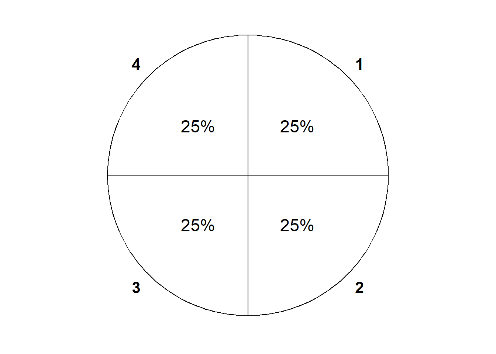
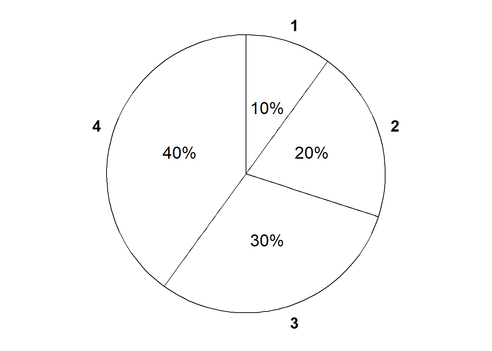
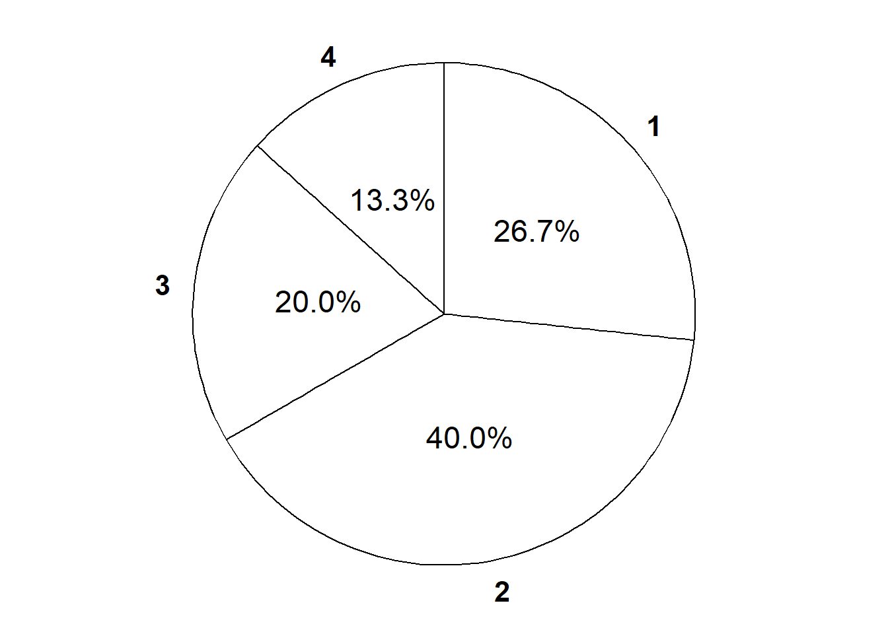
It is usually reasonable to assume that dice are fair, but most real world situations are not as simple as rolling dice. Just because a situation has 16 possible outcomes doesn’t mean the outcomes have to be equally likely. For example, there might be 12 contestants on your favorite reality competition show, but that doesn’t mean that all of the 12 contestants are equally likely to win the season.
2.4.3 Some probability measures in the meeting problem
Recall the meeting problem. The general problem involves multiple people, but we’ll first consider the arrival time of just a single person, who we’ll call Han22.
Suppose that Han’s arrival time will definitely be between noon and 1:00, so that the sample space—with time measured in minutes after noon, including fractions of a minute—is \(\Omega = [0, 60]\).
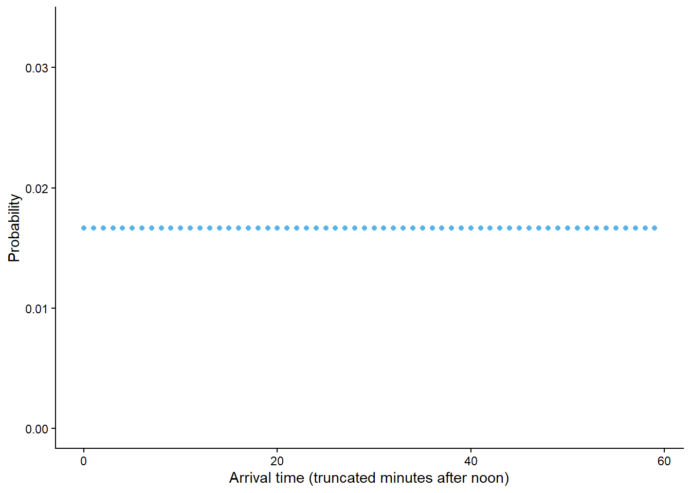
Example 2.28 illustrated that for a finite sample space with equally likely outcomes, computing the probability of an event reduces to counting the number of outcomes that satisfy the event and dividing by the total number of possible outcomes. The continuous analog of equally likely outcomes is a uniform probability measure. When the sample space is uncountable, size is measured continuously (length, area, volume) rather that discretely (counting).
\[ \textrm{P}(A) = \frac{\text{size of } A}{\text{size of } \Omega} \qquad \text{if $\textrm{P}$ is a uniform probability measure} \]
The uniform probability measure in Example 2.32 is just one probability measure for Han’s arrival, reflecting an assumption that Han is “equally likely” to arrive at any time between noon and 1:00. Now we’ll model Han’s arrival time with a non-uniform probability measure which reflects that he is more likely to arrive near certain times than others.
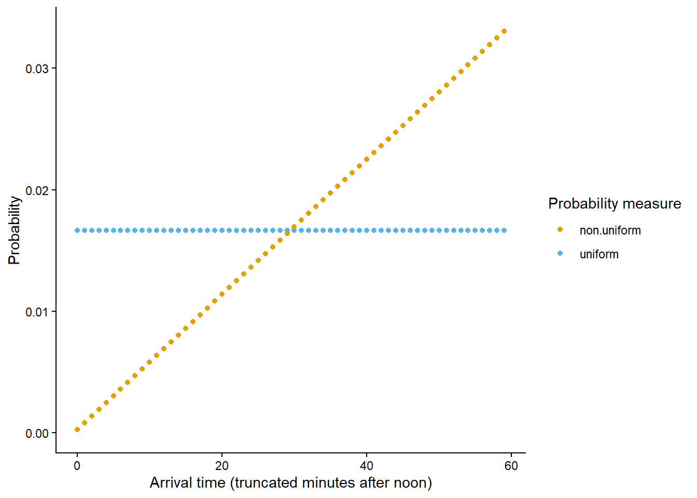
The probability measure in Example 2.33 is a non-uniform measure. Han is much more likely to arrive between 12:45 and 1:00 than between 12:00 and 12:15, even though both these intervals have the same length.
The last part in Example 2.34 might seem counterintuitive at first. There was nothing special about 12:00; pick any precise time in the continuous interval from noon to 1:00, and the probability that Han arrives at that exact time, with infinite precision, is 0. This idea can be understood as a limit. The probability that Han arrives within one minute of the specified time is small, within one second of the specified time is even smaller, within one millisecond of the specified time is even smaller still; with infinite precision these time increments can get smaller and smaller indefinitely. Of course, infinite precision is not practical, but assuming the possible arrival times are represented by a continuous interval provides a reasonable mathematical model. Even though any particular time has probability 0 of being the precise arrival time, intervals of time still have positive probability of containing the arrival time. When we ask a question like “what is the probability that Han arrives at noon”, “at noon” really means “within 1 minute of noon” or “within 1 second of noon” or within whatever degree of precision is good enough for our practical purposes, and such intervals have non-zero probability.
Continuous sample spaces introduce some complications that we didn’t encounter when dealing with discrete sample spaces. For a continuous sample space, the probability of any particular outcome24 is 0. However, Example 2.35 illustrates that in some sense certain outcomes can be more likely than others; Han is more likely to arrive close to 1:00 than close to noon. For continuous sample spaces it makes more sense to consider “close to” probabilities rather than “equals to” probabilities. We will investigate related ideas in much more detail as we go.
Now we’ll return to the two-person (Regina, Cady) meeting problem from Example 2.3, with sample space depicted in Figure 2.2. We will use pictures to represent a few probability measures corresponding to different assumptions about the arrival times. In the pictures below, lighter colors represent regions of outcomes that are more likely; darker colors, less likely.
Figure 2.12 corresponds to a uniform probability measure under which all outcomes are “equally likely”. This probability measure would be appropriate if we assume that Regina and Cady each arrive at a time uniformly at random between noon and 1, independently of each other.

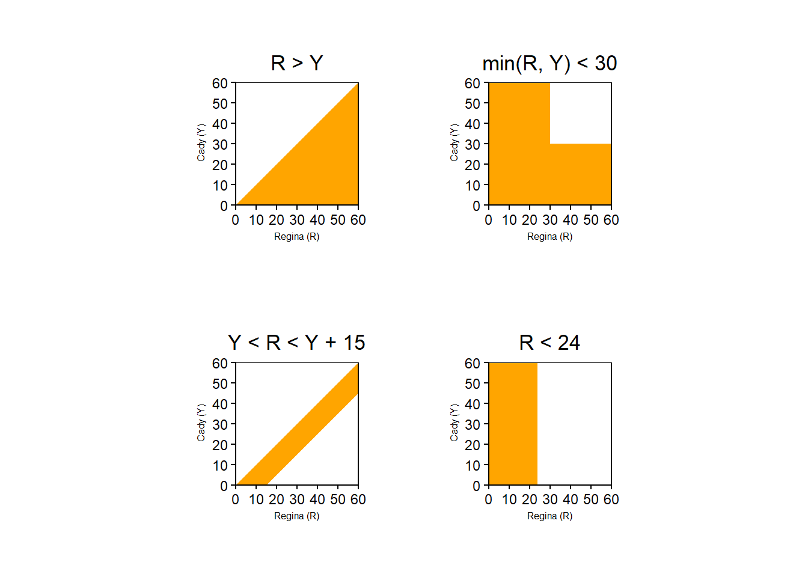
Example 2.37 and Example 2.34 illustrate similar ideas. Regardless of the precise time in the continuous interval \([0, 60]\) at which Regina arrives, the probability that Cady arrives at that exact time, with infinite precision, is 0. In practice, if we’re interested in “the probability that Regina at Cady arrive at the same time”, we really mean “close enough to the same time”, where “close enough” could be within one minute or one second or whatever degree of precision is good enough for practical purposes.
Most random phenomenon do not involve equally likely outcomes or uniform probability measures. Even when the underlying outcomes are equally likely, the values of related random variables are usually not. Therefore, most interesting probability problems involve “non-uniform” probability measures.
Figure 2.14 corresponds to one non-uniform probability measure for the two-person meeting problem; certain outcomes are more likely than others. (Lighter colors represent regions of outcomes that are more likely; darker colors, less likely.) Such a probability measure would be appropriate if we assume that Regina and Cady each are more likely to arrive around 12:30 than noon or 1:00, independently of each other. Switching from the uniform probability measure represented by Figure 2.12 to the non-uniform one represented by Figure 2.14 would change the probability of the events in Example 2.36 and Example 2.37. (We’ll see how to compute probabilities for non-uniform measures later.)
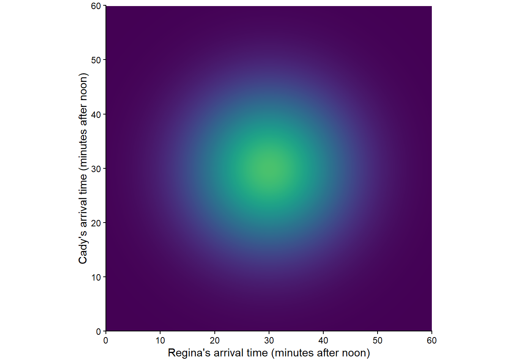
Figure 2.15 corresponds to another “non-uniform” probability measure. Such a probability measure would be appropriate if we assume that Regina and Cady each are more likely to arrive around 12:30 than noon or 1:00, but they coordinate their arrivals so they are more likely to arrive around the same time.
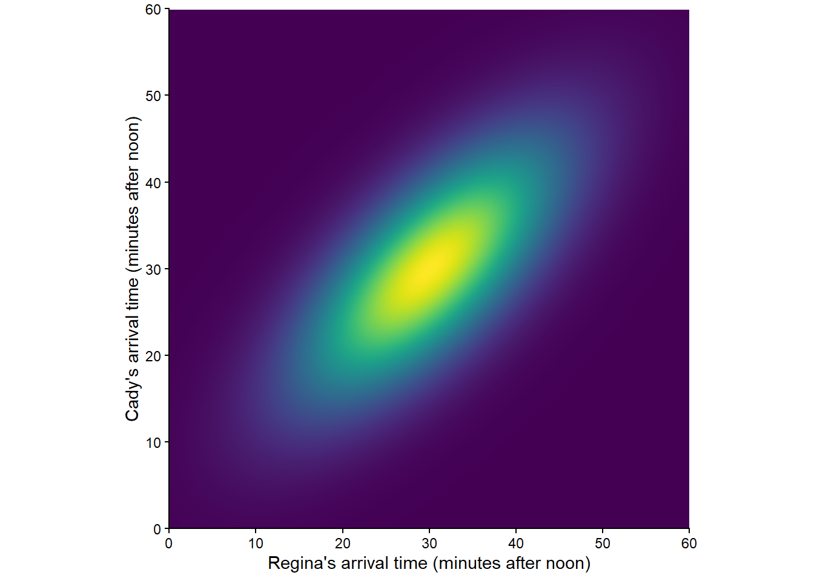
There are many other probability measures for the meeting problem, representing different sets of assumptions. Each probability measure assigns a probability to events like “Cady arrives first”, “both arrive before 12:20”, and “the first person to arrive has to wait less than 15 minutes for the second to arrive”, and these probabilities can differ between models.
2.4.4 Some properties of probability measures
Many other properties follow from the axioms, some of which we state below. Don’t let notation or names like the “complement rule” confuse you. We have already successfully used all of the properties below intuitively when working with two-way tables. All that is new in this section is mathematical formalism. Yes, getting comfortable with proper notation is part of learning the language of probability. But don’t let formality get in the way of your intuition. Continue to use the ideas from Chapter 1, including tools like two-way tables.
The main “meat” of the axioms is countable additivity. Thus, the key to many proofs of probability properties is to express relevant events in terms of unions of disjoint events. (Proof are included in the footnotes.)
Lemma 2.2 (Complement rule) For any event25 \(A\), \(\textrm{P}(A^c) = 1 - \textrm{P}(A)\).
The complement rule follows from the fact that an event either happens or it doesn’t. We’ll see that it is sometimes more convenient to compute directly the probability that an event does not happen and then use the complement rule.
Lemma 2.3 (Subset rule) If \(A \subseteq B\) then26 \(\textrm{P}(A) \le \textrm{P}(B)\).
The subset rule says that if every outcome that satisfies event \(A\) also satisfies event \(B\) then the probability of event \(B\) must be at least as large as the probability of event \(A\). We saw an application of the subset rule in Example 1.9.
Lemma 2.4 (Addition rule for two events) If \(A\) and \(B\) are any two events then27
\[\begin{align*} \textrm{P}(A\cup B) = \textrm{P}(A) + \textrm{P}(B) - \textrm{P}(A \cap B) \end{align*}\]
The addition rule for more than two events is complicated28 (unless the events are disjoint). For example, the addition rule for three events is \[\begin{align*} \textrm{P}(A\cup B\cup C) & = \textrm{P}(A) + \textrm{P}(B) + \textrm{P}(C)\\ & \qquad - \textrm{P}(A\cap B) - \textrm{P}(A \cap C) - \textrm{P}(B \cap C)\\ & \qquad + \textrm{P}(A \cap B \cap C). \end{align*}\]
Many problems involve finding the “probability of at least one…” On the surface such problems involve unions (“at least one of events \(A_1, A_2, \ldots\) occur if event \(A_1\) occurs OR event \(A_2\) occurs OR…”) Since the general addition rule for multiple events is complicated, unless the events are disjoint it is usually more convenient to use the complement rule and compute “the probability of at least one…” as one minus “the probability of none…” The “probability of none…” involves intersections (“none of the events \(A_1, A_2, \ldots\) occur if event \(A_1\) does not occur AND event \(A_2\) does not occur AND…”). We will see more about probabilities of intersections later.
Lemma 2.5 (Law of total probability) If \(C_1, C_2, C_3\ldots\) are disjoint events with \(C_1\cup C_2 \cup C_3\cup \cdots =\Omega\), then29
\[\begin{align*} \textrm{P}(A) & = \textrm{P}(A \cap C_1) + \textrm{P}(A \cap C_2) + \textrm{P}(A \cap C_3) + \cdots \end{align*}\]
Since \(C\) and \(C^c\) are disjoint with \(C \cup C^c = \Omega\), a special case is
\[\begin{align*} \textrm{P}(A) & = \textrm{P}(A \cap C) + \textrm{P}(A \cap C^c) \end{align*}\]
In the law of total probability the events \(C_1, C_2, C_3, \ldots\), which represent “cases”, form a partition of the sample space; each outcome in the sample space satisfies exactly one of the cases \(C_i\). The law of total probability says that we can compute the “overall” probability \(\textrm{P}(A)\) by breaking \(A\) down into pieces and then summing the case-by-case probabilities \(\textrm{P}(A\cap C_i)\). We use the law of total probability intuitively when we sum across rows and columns in two-way tables. (Later we will see a different and more useful expression of the law of total probability, involving conditional probabilities.)
The following example is one we have basically covered before, Example 1.15, but now we use mathematical notation and properties. However, the ideas are the same as we discussed in Example 1.15.
The following example involves randomly selecting a U.S. household. Note that while “randomly select” is commonly used terminology, it is not the best wording. Remember that “random” simply means uncertain, so technically “randomly select” just means selecting in a way that the outcome is uncertain. Suppose I want to “randomly select” one of two households, A or B. I could put 10 tickets in a hat, with 9 labeled A and 1 labeled B, and then draw a ticket; this is random selection because the outcome of the draw is uncertain. However, what is often meant by “randomly select” is selecting in a way that each outcome is equally likely. To give households A and B the same chance of being selected, I would put a single ticket for each in the hat. Randomly selecting in a way that each outcome is equally likely could be described more precisely as “selecting uniformly at random”. (We will discuss equally likely outcomes in more detail later.)
Probabilities involving multiple events, such as \(\textrm{P}(A \cap B)\) or \(\textrm{P}(X>80, Y<2)\), are often called joint probabilities. Note that the axioms do not specify any direct requirements on probabilities of intersections. In particular, is not necessarily true that \(\textrm{P}(A\cap B)\) equals \(\textrm{P}(A)\textrm{P}(B)\). It is true that probabilities of intersections can be obtained by multiplying, but the product generally involves at least one conditional probability that reflects any association between the events involved. In general, joint probabilities (\(\textrm{P}(A \cap B)\)) can not be computed based on the individual probabilities (\(\textrm{P}(A)\), \(\textrm{P}(B)\)) alone. We will explore this topic in more depth later.
2.4.5 Probability models
A probability model (or probability space) puts all the objects we have seen so far in this chapter together in a model for the random phenomenon. Think of a probability model31 as the collection of all outcomes, events, and random variables associated with a random phenomenon along with the probabilities of all events of interest (and distributions of random variables) under the assumptions of the model.
There will be many probability measures that satisfy the logical consistency requirements of the probability axioms. Which one is most appropriate depends on the assumptions about the random phenomenon. We will study a variety of commonly used probability models throughout the book.
Perhaps the concept of multiple potential probability measures is easier to understand in a subjective probability situation. For example, each model that is used to forecast the 2024-2025 NFL season corresponds to a probability measure which assigns probabilities to events like “the Eagles win the 2025 Superbowl”. Different sets of assumptions and models can assign different probabilities for the same events. As another example, the weather forecaster on one local news station might report that the probability of rain tomorrow is 0.6, while an online source might report it as 0.5. Each weather forecasting model corresponds to a different probability measure which encodes a set of assumptions about the random phenomenon.
Before moving on, we want to reiterate: Most random phenomenon do not involve equally likely outcomes or uniform probability measures. Even when the underlying outcomes are equally likely, the values of related random variables are usually not. Equally like outcomes or uniform probability measures are the simplest probability measures, and therefore are the ones we typically encounter first. But don’t let that fool you; most interesting probability problems involve non-equally likely outcomes or non-uniform probability measures.
It’s easy to get confused between things like events, random variables, and probabilities, and the symbols that represent them. But a strong understanding of these fundamental concepts will help you solve probability problems. Examples like the following do more than encourage proper use of notation. Explaining to Donny why he is wrong will help you better understand the objects that symbols represent, how they are different from one another, and how they connect to real-world contexts.
2.4.6 Exercises
Exercise 2.8 Consider the matching problem with \(n=4\): objects labeled 1, 2, 3, 4, are placed at random in spots labeled 1, 2, 3, 4, with spot 1 the correct spot for object 1, etc. Recall the sample space from Table 2.2. Let the random variable \(X\) count the number of objects that are put back in the correct spot; recall Table 2.9. Let \(\textrm{P}\) denote the probability measure corresponding to the assumption that the objects are equally likely to be placed in any spot, so that the 24 possible placements are equally.
- Compute and interpret \(\textrm{P}(X=0)\).
- Compute and interpret \(\textrm{P}(X \ge 1)\).
- Let \(C_1\) be the event that object 1 is put correctly in spot 1. Find \(\textrm{P}(C_1)\).
- Let \(C_2\) be the event that object 2 is put correctly in spot 2. Find \(\textrm{P}(C_2)\).
- Define \(C_3\), and \(C_4\) similarly. Represent the event \(\{X \ge 1\}\) in terms of \(C_1, C_2, C_3, C_4\).
- Find and interpret \(\textrm{P}(C_1\cap C_2 \cap C_3 \cap C_4)\).
- Donny Don’t says: \(\textrm{P}(C_1 \cup C_2 \cup C_3 \cup C_4)\) is equal to \(\textrm{P}(C_1)+\textrm{P}(C_2)+\textrm{P}(C_3)+\textrm{P}(C_4)\).” Explain to Donny his mistake.
- Donny Don’t says: “ok, the events are not disjoint so then by the general addition rule \(\textrm{P}(C_1 \cup C_2 \cup C_3 \cup C_4)\) is equal to \(\textrm{P}(C_1)+\textrm{P}(C_2)+\textrm{P}(C_3)+\textrm{P}(C_4)-\textrm{P}(C_1\cap C_2 \cap C_3 \cap C_4)\).” Explain to Donny his mistake.
Exercise 2.9 Consider the outcome of a sequence of 4 flips of a coin. Assume that the coin is fair so that all 16 possible outcomes are equally likely, and let \(\textrm{P}\) be the corresponding probability measure. Let \(X\) be the number of heads flipped and let \(Y=4-X\).
- Compute \(\textrm{P}(X=1)\).
- Compute \(\textrm{P}(X = x)\) for each \(x = 0, 1, 2, 3, 4\).
- Compute \(\textrm{P}(Y=1)\).
- Compute \(\textrm{P}(Y = y)\) for each \(y = 0, 1, 2, 3, 4\).
- Compute \(\textrm{P}(X = Y)\).
Exercise 2.10 The latest series of collectible Lego Minifigures contains 3 different Minifigure prizes (labeled 1, 2, 3). Each package contains a single unknown prize. Suppose we only buy 3 packages and we consider as our sample space outcome the results of just these 3 packages (prize in package 1, prize in package 2, prize in package 3). For example, 323 (or (3, 2, 3)) represents prize 3 in the first package, prize 2 in the second package, prize 3 in the third package. Suppose that each package is equally likely to contain any of the 3 prizes, regardless of the contents of other packages, so that there are 27 equally likely outcomes, and let \(\textrm{P}\) be the corresponding probability measure.
- Let \(A_1\) be the event that prize 1 is obtained—that is, at least one of the packages contains prize 1—and define \(A_2, A_3\) similarly for prize 2, 3.
- Let \(B_1\) be the event that only prize 1 is obtained—that is, all three packages contain prize 1—and define \(B_2, B_3\) similarly for prize 2, 3.
- Compute \(\textrm{P}(A_1)\)
- Compute \(\textrm{P}(B_1)\)
- Interpret the values from parts 1 and 2 as long run relative frequencies.
- Interpret the values from parts 1 and 2 as relative likelihoods.
- Compute \(\textrm{P}(A_1 \cap A_2 \cap A_3)\)
- Compute \(\textrm{P}(A_1 \cup A_2 \cup A_3)\)
- Compute \(\textrm{P}(B_1 \cap B_2 \cap B_3)\)
- Compute \(\textrm{P}(B_1 \cup B_2 \cup B_3)\)
Exercise 2.11 The latest series of collectible Lego Minifigures contains 3 different Minifigure prizes (labeled 1, 2, 3). Each package contains a single unknown prize. Suppose we only buy 3 packages and we consider as our sample space outcome the results of just these 3 packages (prize in package 1, prize in package 2, prize in package 3). For example, 323 (or (3, 2, 3)) represents prize 3 in the first package, prize 2 in the second package, prize 3 in the third package. Suppose that each package is equally likely to contain any of the 3 prizes, regardless of the contents of other packages, so that there are 27 equally likely outcomes, and let \(\textrm{P}\) be the corresponding probability measure.
Let \(X\) be the number of distinct prizes obtained in these 3 packages. Let \(Y\) be the number of these 3 packages that contain prize 1.
The sample space consists of 27 outcomes, listed in the table below.
| 111 | 112 | 113 | 121 | 122 | 123 | 131 | 132 | 133 | |
| \(X\) | |||||||||
| \(Y\) | |||||||||
| 211 | 212 | 213 | 221 | 222 | 223 | 231 | 232 | 233 | |
| \(X\) | |||||||||
| \(Y\) | |||||||||
| 311 | 312 | 313 | 321 | 322 | 323 | 331 | 332 | 333 | |
| \(X\) | |||||||||
| \(Y\) |
- Compute \(\textrm{P}(X = 1)\).
- Compute \(\textrm{P}(X = 2)\).
- Compute \(\textrm{P}(X = 3)\).
- Interpret the values in parts 1 through 3 as long run relative frequencies.
- Interpret the values in parts 1 through 3 as relative likelihoods.
- Compute \(\textrm{P}(Y = y)\) for each possible value \(y\).
- Compute \(\textrm{P}(X = 2, Y = 1)\).
- Compute \(\textrm{P}(X = Y)\).
Exercise 2.12 Katniss throws a dart at a circular dartboard with radius 1 foot. Suppose that the dart lands uniformly at random anywhere on the dartboard, and let \(\textrm{P}\) be the corresponding probability measure.
- Compute \(\textrm{P}(A)\), where \(A\) is the event that Katniss’s dart lands within 1 inch of the center of the dartboard.
- Compute \(\textrm{P}(B)\), where \(B\) is the event that Katniss’s dart lands more than 1 inch but less than 2 inches away from the center of the dartboard.
- Compute \(\textrm{P}(E)\), where \(E\) is the event that Katniss’s dart lands within 1 inch of the outside edge of the dartboard.
- Interpret the previous probabilities as long run relative frequencies.
- Interpret the previous probabilities as relative likelihoods.
Exercise 2.13 Katniss throws a dart at a circular dartboard with radius 1 foot. Suppose that the dart lands uniformly at random anywhere on the dartboard, and let \(\textrm{P}\) be the corresponding probability measure.
Let \(X\) be the distance (inches) from the location of the dart to the center of the dartboard.
- Compute \(\textrm{P}(X \le 1)\)
- Compute \(\textrm{P}(1 < X < 2)\)
- Compute \(\textrm{P}(X > 11)\)
Exercise 2.14 Katniss throws a dart at a circular dartboard with radius 1 foot. Suppose that the dart lands uniformly at random anywhere on the dartboard, and let \(\textrm{P}\) be the corresponding probability measure.
Let \(X\) be the distance (inches) from the location of the dart to the center of the dartboard.
- Compute \(\textrm{P}(X \le 0.1)\)
- Compute \(\textrm{P}(X \le 0.01)\)
- Compute \(\textrm{P}(X = 0)\)
- Compute \(\textrm{P}(X \ge 11.9)\)
- Compute \(\textrm{P}(X \ge 11.99)\)
- Compute \(\textrm{P}(X = 12)\)
- Which is more likely: the dart lands exactly in the center or the darts lands exactly on the edge? Discuss.
- Which is more likely: the dart lands close to the center or the darts lands close to the edge? Discuss.
2.5 Distributions of random variables (a brief introduction)
Even when outcomes of a random phenomenon are equally likely, values of related random variable are usually not. The probability distribution of a random variable describes the possible values that the random variable can take and their relative likelihoods or plausibilities. We will see several ways of summarizing and describing distributions throughout the book; this section only provides a brief introduction.
| x | P(X=x) |
|---|---|
| 2 | 0.0625 |
| 3 | 0.1250 |
| 4 | 0.1875 |
| 5 | 0.2500 |
| 6 | 0.1875 |
| 7 | 0.1250 |
| 8 | 0.0625 |
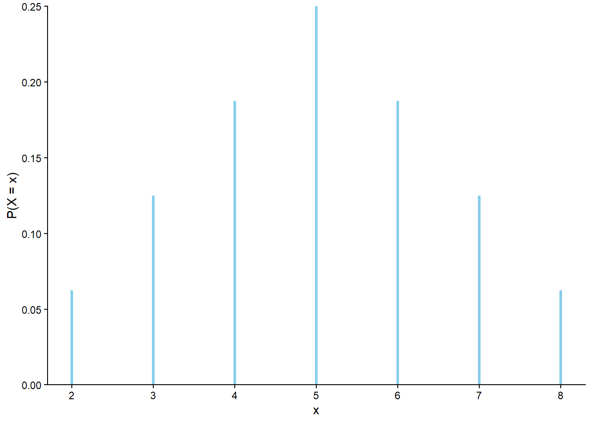
| y | P(Y=y) |
|---|---|
| 1 | 0.0625 |
| 2 | 0.1875 |
| 3 | 0.3125 |
| 4 | 0.4375 |
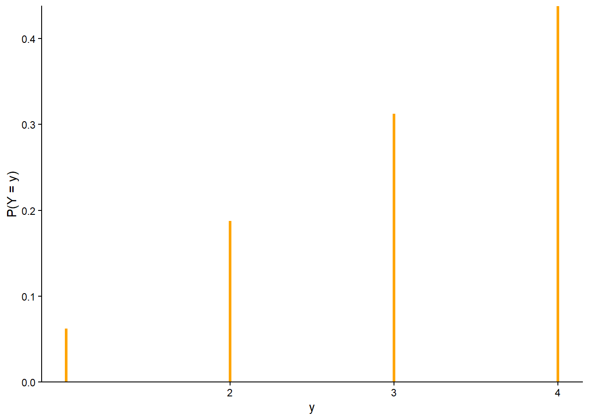
| (x, y) | P(X = x, Y = y) |
|---|---|
| (2, 1) | 0.0625 |
| (3, 2) | 0.1250 |
| (4, 2) | 0.0625 |
| (4, 3) | 0.1250 |
| (5, 3) | 0.1250 |
| (5, 4) | 0.1250 |
| (6, 3) | 0.0625 |
| (6, 4) | 0.1250 |
| (7, 4) | 0.1250 |
| (8, 4) | 0.0625 |
| \(x\) \ \(y\) | 1 | 2 | 3 | 4 |
| 2 | 1/16 | 0 | 0 | 0 |
| 3 | 0 | 2/16 | 0 | 0 |
| 4 | 0 | 1/16 | 2/16 | 0 |
| 5 | 0 | 0 | 2/16 | 2/16 |
| 6 | 0 | 0 | 1/16 | 2/16 |
| 7 | 0 | 0 | 0 | 2/16 |
| 8 | 0 | 0 | 0 | 1/16 |
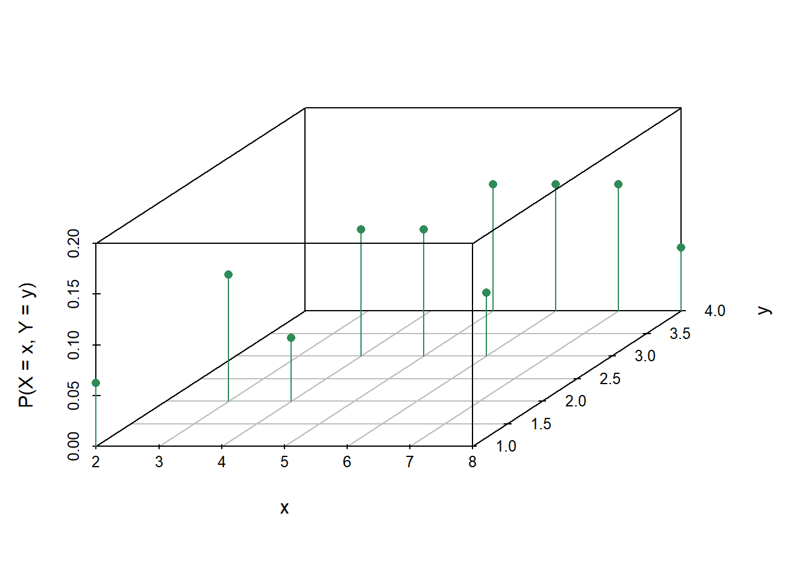
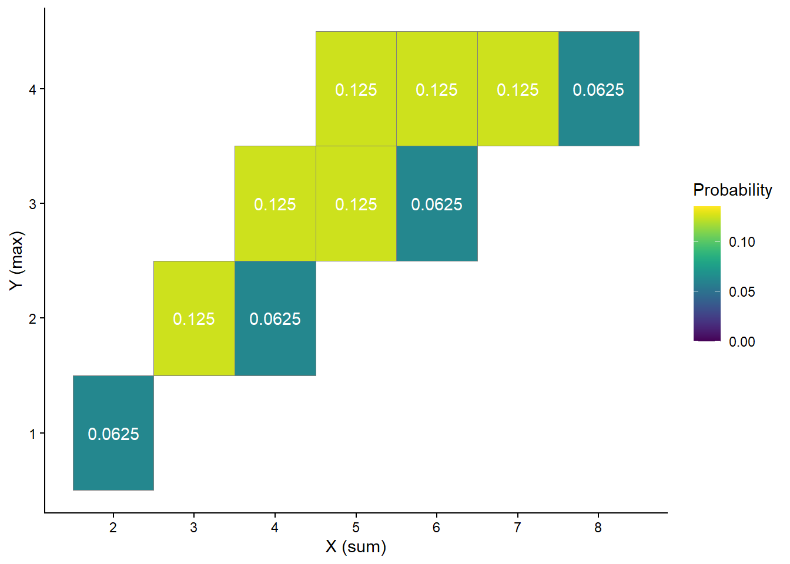
The above tables and plots represent the joint and marginal distributions of the random variables \(X\) and \(Y\) in Example 2.41 according to the probability measure \(\textrm{P}\), which reflects the assumption that the die is fair and the rolls are independent.
Table 2.17, Table 2.16, Figure 2.18 and Figure 2.19 represent the joint distribution of the sum and larger of two rolls of a fair four-sided die.. The joint distribution of two random variables summarizes the possible pairs of values and their relative likelihoods or plausibilities.
In the context of multiple random variables, the distribution of any one of the random variables is called a marginal distribution. Table 2.14 and Figure 2.16 represent the marginal distribution of the sum and larger of two rolls of a fair four-sided die. Table 2.15 and Figure 2.17 represent the marginal distribution of the larger of two rolls of a fair four-sided die.
Distributions of random variables depend on the underlying probability measure. Changing the probability measure can change distributions.
In Example 2.41, we first specified the probability space of 16 equally likely outcomes then derived the distribution. However, in many problems we often assume or identify distributions directly, without any mention of the underlying sample space or probability measure. Recall the brown bag analogy in Section 2.3.2. The probability space corresponds to the random selection of fruits to put in the bag. The random variable is weight. The distribution of weight can be obtained by randomly selecting fruits to put in the bag, weighing the bag, and then repeating this process many times to observe many weights. For example, maybe 10% of bags have weights less than 5 pounds, 75% of bags have weights less than 20 pounds, etc. We can observe the distribution of weights even if we don’t observe the actual fruits in the bag or fully specify the random phenomenon and its sample space.
Example 2.41 involved two discrete random variables. We will introduce distributions of continuous random variables later.
2.5.1 Marginal distributions do not determine the joint distribution
In Example 2.41, we can obtain the marginal distributions from the joint distribution by summing rows and columns: think of adding a total column (for \(X\)) and a total row (for \(Y\)) in the “margins” of the table. It is always possible to obtain marginal distributions of the random variables in a collection from their joint distribution. However, in general the marginal distributions alone are not enough to determine the joint distribution.
| \(x\) \ \(y\) | 1 | 2 | 3 | 4 |
| 2 | 1/256 | 3/256 | 5/256 | 7/256 |
| 3 | 2/256 | 6/256 | 10/256 | 14/256 |
| 4 | 3/256 | 9/256 | 15/256 | 21/256 |
| 5 | 4/256 | 12/256 | 20/256 | 28/256 |
| 6 | 3/256 | 9/256 | 15/256 | 21/256 |
| 7 | 2/256 | 6/256 | 10/256 | 14/256 |
| 8 | 1/256 | 3/256 | 5/256 | 7/256 |
Table 2.17 and Table 2.18 provide an illustration of two different joint distributons with the same marginal distributions. When representing the joint distribution of two discrete random variables in a table, just because you know the row and column totals doesn’t mean you know all the values of the interior cells.
A joint distribution represents all of the probabilistic behavior of a collection of random variables. It is always possible to obtain marginal distributions of the random variables in a collection from their joint distribution.
However, in general you cannot determine the joint distribution based on the marginal distributions alone. Marginal distributions only reflect how each random variable behaves in isolation. The joint distribution goes further and fully represents relationships between the random variables. Just because you know how each random variable behaves individually, you don’t necessarily know how they behave in relationship with each other.
The exception to this warning is when random variables are independent, which we’ll discuss later. But you shouldn’t simply assume random variables are independent without sufficient justification.
2.5.2 Interpretations of distributions
Distributions can be thought of as collections of probabilities of events involving random variables. As for probabilities, we can interpret probability distributions of random variables as:
- long run relative frequency distributions: what pattern of values would emerge if we repeated the random process many times and observed many values of the random variables?
- subjective probability distributions: which potential values of these uncertain quantities are relatively more plausible than others?
The long run relative frequency interpretation is natural for Example 2.41. We can roll a pair of fair four-sided dice and measure the sum of the rolls and the larger of the rolls. If we repeat this process many times, we would expect about 6.25% of repetitions to result in a sum of 2, 12.5% of repetitions to result in a sum of 3, 6.25% of repetitions to result in a larger roll of 1, 18.75% of repetitions to result in a larger roll of 3, 6.25% of repetitions to result in both a sum of 2 and a larger roll of 1, 12.5% of repetitions to result in both a sum of 3 and a larger roll of 2, etc. If we summarize the results of many repetitions—which we will do in the next chapter—we would expect the patterns to look like those in the tables and plots in this section.
In other situations the subjective distribution interpretation is more natural. For example, the total number of points scored in the next Superbowl will be one and only one number, but since we don’t know what that number is we can treat it as a random variable. Treating the number of points as a random variable allows us to quantify our uncertainty about it through probability statements like “there is a 0.6 probability that at most 45 points will be scored in the next Superbowl”. A subjective probability distribution for the number of points describes which possible values are relatively more plausible than others.
As with probabilities, the mathematics of distributions work the same way regardless of which interpretation is used, so we will use the two interpretations interchangeably.
2.5.3 Expected value
The distribution of a random variable specifies its possible values and the probability of any event that involves the random variable. It is also useful to summarize some key features of a distribution. Recall that in Section 1.7 we introduced the idea of a “probability-weighted average value”. We also saw how this value can be interpreted as a “long run average value”.
In Example 2.44, 5 is the expected value of \(X\), denoted \(\textrm{E}(X)\). Likewise, \(\textrm{E}(Y) = 3.125\). As we discussed in Section 1.7 the term “expected value” is somewhat of a misnomer. The expected value of \(X\) is not necessarily the value of \(X\) we expect to see when the random phenomenon is observed, but rather the value of \(X\) we would expect to see on average in the long run over many observations of the random phenomenon.
The distribution of a random variable and hence its expected value depend on the probability measure. If the probability measure changes (e.g., from representing a fair die to a weighted die) then distributions and expected values of random variables can change.
Example 2.44 involved two discrete random variables. We will introduce expected values of continuous random variables later.
Expected value is just one feature of a distribution. We are also interested in other features, such as percentiles or the overall degree of variability. Usually there are multiple random variables of interest and we are interested in summarizing relationships between them. We will explore distributions of random variables and related concepts such as expected value, variance, and correlation in much more detail in the remaining chapters.
2.5.4 Exercises
Exercise 2.15 Consider the matching problem with \(n=4\): objects labeled 1, 2, 3, 4, are placed at random in spots labeled 1, 2, 3, 4, with spot 1 the correct spot for object 1, etc. Recall the sample space from Table 2.2. Let the random variable \(X\) count the number of objects that are put back in the correct spot; recall Table 2.9. Let \(\textrm{P}\) denote the probability measure corresponding to the assumption that the objects are equally likely to be placed in any spot, so that the 24 possible placements are equally.
- Find the distribution of \(X\) by creating an appropriate table and plot.
- Find the probability-weighted average value of \(X\).
- Is the value from part 2 the most likely value of \(X\)? Explain.
- Is the value from part 2 the value that we would “expect” to see for \(X\) in a single repetition of the phenomenon? Explain.
- Explain in what sense the value from part 2 is “expected”.
Exercise 2.16 Continuing Exercise 2.6.
The latest series of collectible Lego Minifigures contains 3 different Minifigure prizes (labeled 1, 2, 3). Each package contains a single unknown prize. Suppose we only buy 3 packages and we consider as our sample space outcome the results of just these 3 packages (prize in package 1, prize in package 2, prize in package 3). For example, 323 (or (3, 2, 3)) represents prize 3 in the first package, prize 2 in the second package, prize 3 in the third package. Let \(X\) be the number of distinct prizes obtained in these 3 packages. Let \(Y\) be the number of these 3 packages that contain prize 1. Suppose that each package is equally likely to contain any of the 3 prizes, regardless of the contents of other packages. There are 27 possible, equally likely outcomes
- Construct a two-way table representing the joint distribution of \(X\) and \(Y\).
- Sketch a plot representing the joint distribution of \(X\) and \(Y\).
- Identify the marginal distribution of \(X\), and sketch a plot of it.
- Identify the marginal distribution of \(Y\), and sketch a plot of it.
- Compute and interpret \(\text{E}(X)\).
- Compute and interpret \(\text{E}(Y)\).
2.6 Conditioning
All probabilities are conditional on some information. Conditioning concerns how probabilities of events or distributions of random variables are influenced by information about the occurrence of events or the values of random variables. We discussed some ideas related to conditioning in Section 1.5. This section—really a chapter within a chapter—explores conditioning in more detail, introducing some of the notation and math.
2.6.1 Conditional probability
A probability quantifies the likelihood or degree of uncertainty of an event. A conditional probability revises this value to reflect any newly available information about the outcome of the underlying random phenomenon.
Definition 2.7 The conditional probability of event \(A\) given event \(B\), denoted \(\textrm{P}(A|B)\), is defined as (provided35 \(\textrm{P}(B)>0\)):
\[ \textrm{P}(A|B) = \frac{\textrm{P}(A\cap B)}{\textrm{P}(B)} \]
The conditional probability \(\textrm{P}(A|B)\) represents the likelihood, plausibility, or degree of uncertainty of event \(A\) reflecting information that event \(B\) has occurred. The event to the left of the vertical bar, \(A\) in \(\textrm{P}(A|B)\), is the event we are evaluating the probability of. The unconditional probability \(\textrm{P}(A)\) is often called the prior probability (a.k.a., base rate) of \(A\) (prior to observing \(B\)). The event to the right of the vertical bar, \(B\) in \(\textrm{P}(A|B)\), is the event being conditioned on—how does the probability of \(A\) change given that event \(B\) occurs? The conditional probability \(\textrm{P}(A|B)\) is the posterior probability of \(A\) after observing \(B\). Read the vertical bar \(|\) in \(\textrm{P}(A | B)\) as “given”.
In Example 2.45, \(\textrm{P}(C|A) = 0.65\) is the conditional probability that an adult uses Snapchat given that they are age 18-29, and \(\textrm{P}(A|C) = 0.5417\) is the conditional probability that an adult is age 18-29 given that they use Snapchat.
All of the ideas from Section 1.5 still apply. We’ll remind you of a few, using our new notation. Remember that, in general, knowing whether or not event \(B\) occurs influences the probability of event \(A\); that is, \[ \text{In general, } \textrm{P}(A|B) \neq \textrm{P}(A) \] Also remember that order is essential in conditioning; that is, \[ \text{In general, } \textrm{P}(A|B) \neq \textrm{P}(B|A) \] Lastly, remember to always ask “probability of what?” Thinking of a conditional probability as a fraction, the event being conditioned on identifies the total/baseline group which corresponds to the denominator.
2.6.2 Joint, conditional, and marginal probabilities
When dealing with multiple events, probabilities can be joint, conditional, or marginal. In the context of two events \(A\) and \(B\):
- Joint: unconditional probability involving both events, \(\textrm{P}(A \cap B)\).
- Conditional: conditional probability of one event given the other, \(\textrm{P}(A | B)\), \(\textrm{P}(B | A)\).
- Marginal: unconditional probability of a single event \(\textrm{P}(A)\), \(\textrm{P}(B)\).
The relationship \(\textrm{P}(A|B) = \textrm{P}(A\cap B)/\textrm{P}(B)\) can be stated generically as \[ \text{conditional} = \frac{\text{joint}}{\text{marginal}} \] We will see several versions of this general relationship in the remaining chapters.
In Example 2.45, we were provided the marginal probabilities (\(\textrm{P}(A) = 0.20\), \(\textrm{P}(C) = 0.24\)) and a joint probability (\(\textrm{P}(A \cap C) = 0.13\)) and we computed conditional probabilities (\(\textrm{P}(C|A) = 0.65\), \(\textrm{P}(A|C) = 0.5417\)). In many problems some conditional probabilities are provided or can be determined directly.
A mosaic plot provides a nice visual of joint, marginal, and one-way conditional probabilities. The mosaic plot in Figure 2.20 (a) represents conditioning on age group. The vertical bars represent the conditional probabilities of using/not using Snapchat for each group. The widths of the vertical bars are scaled in proportion to the marginal probabilities for the age groups; the bar for 30-49 is a little wider than the others. The area of each rectangle represents a joint probability; the rectangle for “age 18-29 and uses Snapchat” represents 13% of the total area. The single vertical bar on the right displays the marginal probabilities of using/not using Snapchat.
Figure 2.20 (b) represents conditioning on Snapchat use. Now the widths of the vertical bars represent the probabilities of using/not using Snapchat, the heights within the bars represent conditional probabilities of each age group given Snapchat use, and the single bar to the right represents the marginal probabilities of age group.
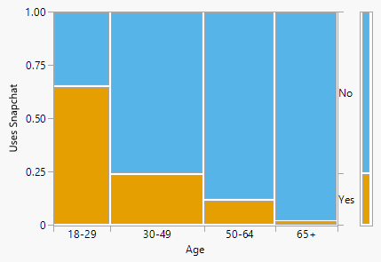
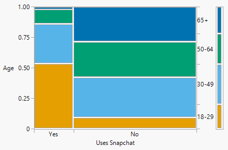
2.6.3 Multiplication rule
In Example 2.46 we were given marginal probabilities of age groups and conditional probabilities of Snapchat use given age groups, and we computed joint probabilities. For example:
- 20% of adults are age 18-29
- 65% of adults age 18-29 use Snapchat
- So 13% of adults are age 18-29 and use Snapchat, \(0.13 = 0.20\times 0.65\).
In fraction terms,
\[ \scriptsize{ \frac{\text{adults age 18-29 who use Snapchat}}{\text{adults}} = \left(\frac{\text{adults age 18-29}}{\text{adults}}\right)\left(\frac{\text{adults age 18-29 who use Snapchat}}{\text{adults age 18-29}}\right) } \]
This calculation is an application of the following multiplication rule which we have already applied intuitively in several examples.
Lemma 2.6 (Multiplication rule) The probability that two events \(A\) and \(B\) both occur is
\[ \begin{aligned} \textrm{P}(A \cap B) & = \textrm{P}(A|B)\textrm{P}(B)\\ & = \textrm{P}(B|A)\textrm{P}(A) \end{aligned} \]
The multiplication rule is just a rearranging of the definition of the conditional probability of one event given another. The multiplication rule says that you should think “multiply” when you see “and”. However, be careful about what you are multiplying: to find a joint probability you need an unconditional probability and an appropriate conditional probability. You can condition either on \(A\) or on \(B\), provided you have the appropriate marginal probability; often, conditioning one way is easier than the other based on the available information. Be careful: the multiplication rule does not say that \(\textrm{P}(A\cap B)\) is equal to \(\textrm{P}(A)\textrm{P}(B)\).
Generically, the multiplication rule says \[ \text{joint} = \text{conditional}\times\text{marginal} \] We will see several versions of this general relationship in the remaining chapters.
The multiplication rule is useful in situations where conditional probabilities are easier to obtain directly than joint probabilities.
The multiplication rule extends naturally to more than two events (though the notation gets messy). For three events, we have
\[ \textrm{P}(A_1 \cap A_2 \cap A_3) = \textrm{P}(A_1)\textrm{P}(A_2|A_1)\textrm{P}(A_3|A_1\cap A_2) \]
And in general, \[ \textrm{P}(A_1\cap A_2 \cap A_3 \cap A_4 \cap \cdots) = \textrm{P}(A_1)\textrm{P}(A_2|A_1)\textrm{P}(A_3|A_1\cap A_2)\textrm{P}(A_4|A_1\cap A_2 \cap A_4)\cdots \]
The multiplication rule is useful for computing probabilities of events that can be broken down into component “stages” where conditional probabilities at each stage are readily available. At each stage, condition on the information about all previous stages.
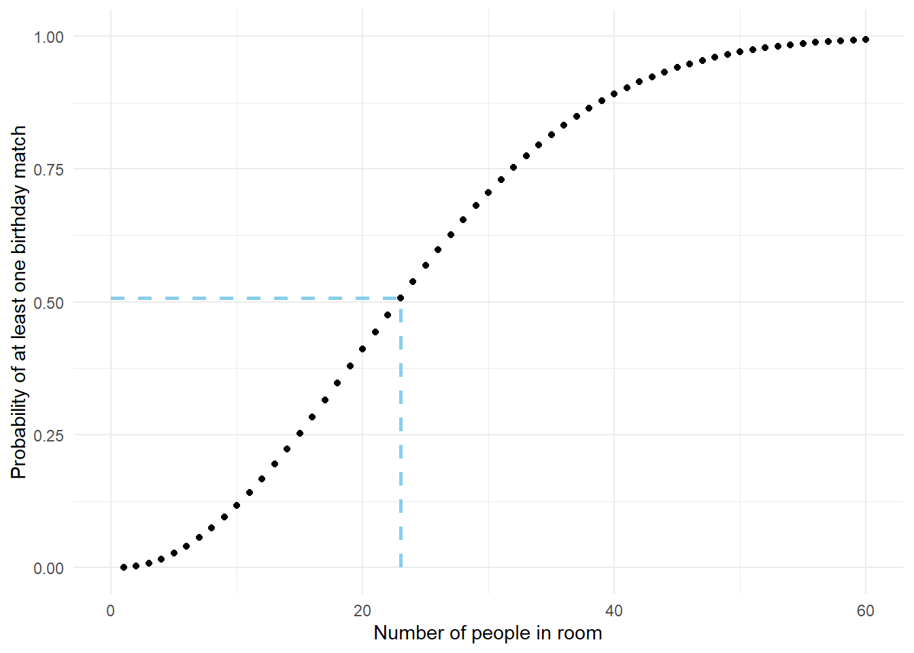
That only 23 people are needed to have a better than 50% chance of a birthday match is surprising to many people, because 23 doesn’t seem like a lot of people. But when determining if there is a birthday match, we need to consider every pair of people in the group. In a group of 23 people, there are \(23(22)/2 = 253\) different pairs of people, and each one of these pairs has a chance of sharing a birthday.
2.6.4 Law of total probability
The law of total probability says that a marginal probability can be thought of as a weighted average of “case-by-case” conditional probabilities, where the weights are determined by the likelihood or plausibility of each case.
The previous example illustrates another version of the law of total probability.
Lemma 2.7 (Law of total probability) If \(C_1, C_2, C_3\ldots\) are disjoint events with \(C_1\cup C_2 \cup C_3\cup \cdots =\Omega\), then42
\[\begin{align*} \textrm{P}(A) & = \textrm{P}(A |C_1)\textrm{P}(C_1) + \textrm{P}(A | C_2)\textrm{P}(C_2) + \textrm{P}(A | C_3)\textrm{P}(C_3) + \cdots \end{align*}\]
The events \(C_1, C_2, C_3, \ldots\), which represent the “cases”, form a partition of the sample space; each outcome \(\omega\in\Omega\) lies in exactly one of the \(C_i\). The law of total probability says that we can interpret the unconditional probability \(\textrm{P}(A)\) as a probability-weighted average of the case-by-case conditional probabilities \(\textrm{P}(A|C_i)\) where the weights \(\textrm{P}(C_i)\) represent the probability of encountering each case.
For an illustration of the law of total probability, consider the mosaic plots in Figure 2.20. In Figure 2.20 (a), the heights of the orange bars for each age group correspond to the conditional probabilities of using Snapchat given age group (0.65, 0.24, 0.12, 0.02). The widths of these bars are scaled in proportion to the marginal probabilities of the age groups; the width of the bar for age 30-49 is 1.65 (0.33/0.20) times wider than the width for age 18-29. The height of the orange part of the single vertical bar on the right represents the marginal probability of using Snapchat (0.2436), and this is the weighted average of the heights of the the other orange bars (the conditional probabilities of using Snapchat given the age groups), with the weights given by the widths of the other bars (the marginal probabilities of the age groups).
The influence of the weighting is even more apparent in the mosaic plot in Figure 2.20 (b). Since the marginal probability of not using Snapchat is greater than the marginal probability of using Snapchat, the marginal probabilities of the age groups are closer to those for the conditional probabilities of the age groups given the adult does not use Snapchat than those given that the adult uses Snapchat.
Conditioning and using the law of probability is an effective strategy in solving many problems, even when the problem doesn’t seem to involve conditioning. For example, when a problem involves iterations or steps it is often useful to condition on the result of the first step.
The game in Example 2.50 could potentially last any number of rounds (1, 2, 3, …) However, the law of total probability allowed us to take advantage of the iterative nature of the game, and consider only one round rather than enumerating all the possibilities of what might happen over many potential rounds.
2.6.5 Conditioning is “slicing and renormalizing”
The process of conditioning can be thought of as “slicing and renormalizing”.
- Extract the “slice” corresponding to the event being conditioned on (and discard the rest). For example, a slice might correspond to a particular row or column of a two-way table, or a section of a plot.
- “Renormalize” the values in the slice so that corresponding probabilities add up to 1.
Slicing determines shape; renormalizing determines scale. Slicing determines relative probabilities; renormalizing just makes sure they add up to 1.
Consider the mosaic plot in Figure 2.20 (b), where the areas of rectangles represent joint probabilities. The areas of the rectangles in the “uses Snapchat” column represent the joint probabilities we used in part 1 of Example 2.46. Imagine taking the rectangles in this column and unstacking them to make a bar plot with heights determined by the joint probabilities of being in each age group and using Snapchat, as in Figure 2.22 (a). The “slice” determines the shape of the bar plot: The bar for age 18-29 is 1.64 times higher than the bar for age 30-49, 4.33 times higher than the bar for age 50-64, and 29.55 times higher than the bar for age 65+.
Summing the joint probabilities in Figure 2.22 (a) over the age groups yields 0.2436, the marginal probability that an adult uses Snapchat. Given that the adult uses Snapchat, we want the conditional probabilities of the age groups to sum to 1. Thus we “renormalize” the joint probabilities on the vertical axis—by dividing each by 0.2436—so that they sum to 1 to obtain the conditional probabilities of each age group given that the adult uses Snapchat, displayed in Figure 2.22 (b). Renormalizing only changes the absolute scale of the plot; compare the values on the vertical axes in Figure 2.22, which correspond to joint probabilities on the left and conditional probabilities on the right. Both plots have the same relative shape: the bar for age 18-29 is 1.64 times higher than the bar for age 30-49, 4.33 times higher than the bar for age 50-64, and 29.55 times higher than the bar for age 65+.
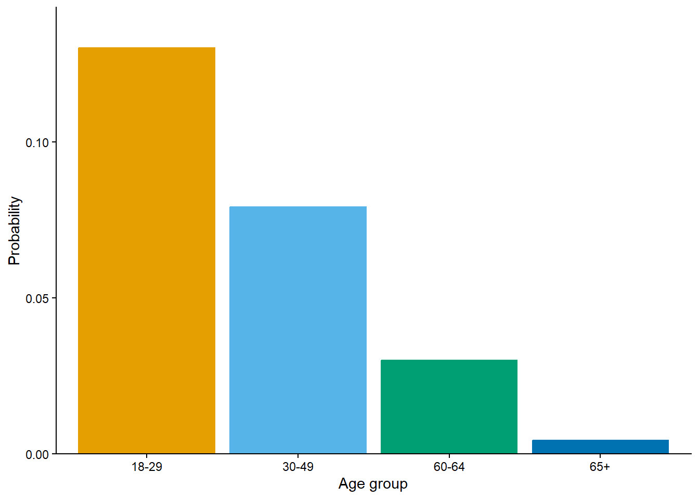
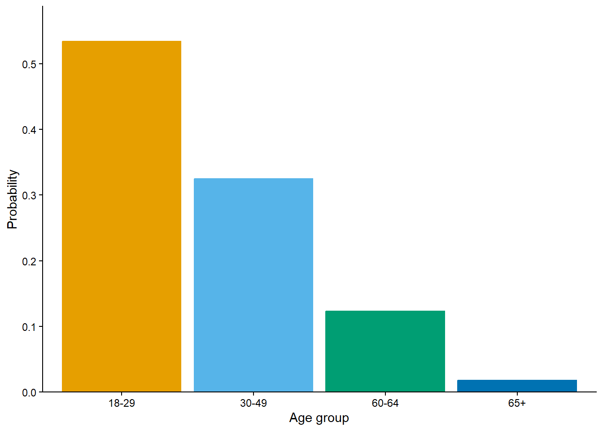
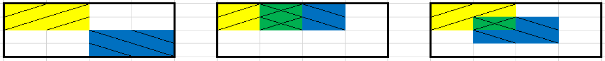
We will see that “slicing and renormalizing” is a helpful way to conceptualize conditioning, especially when dealing with conditional distributions of random variables.
2.6.6 Bayes rule
Bayes’ rule describes how to update uncertainty in light of new information, evidence, or data. We’ll introduce it in the context of two-way tables.
| hypothesis | HS | College | Bachelors | Postgrad | Total |
|---|---|---|---|---|---|
| iterative | 21910 | 19320 | 16030 | 12740 | 70000 |
| unchanging | 5404 | 4396 | 2758 | 1442 | 14000 |
| not sure | 9168 | 4352 | 1552 | 928 | 16000 |
| Total | 36482 | 28068 | 20340 | 15110 | 100000 |
Lemma 2.8 (Bayes rule for events) Bayes’ rule for events44 specifies how a prior probability \(P(H)\) of event \(H\) is updated in response to the evidence \(E\) to obtain the posterior probability \(P(H|E)\). \[ P(H|E) = \frac{P(E|H)P(H)}{P(E)} \]
- Event \(H\) represents a particular hypothesis45 (or model or case)
- Event \(E\) represents observed evidence (or data or information)
- \(P(H)\) is the unconditional or prior probability of \(H\) (prior to observing evidence \(E\))
- \(P(H|E)\) is the conditional or posterior probability of \(H\) after observing evidence \(E\).
- \(P(E|H)\) is the likelihood of evidence \(E\) given hypothesis (or model or case) \(H\)
Bayes rule is often used when there are multiple hypotheses or cases. Suppose \(H_1,H_2, \ldots\) is a series of distinct hypotheses which together account for all possibilities, and \(E\) is any event (evidence). Then Bayes’ rule implies that the posterior probability of any particular hypothesis \(H_j\) satisfies \[ \textrm{P}(H_j |E) = \frac{\textrm{P}(E|H_j)\textrm{P}(H_j)}{\textrm{P}(E)} \]
The marginal probability of the evidence, \(\textrm{P}(E)\), in the denominator can be calculated using the law of total probability \[ \textrm{P}(E) = \textrm{P}(E|H_1) \textrm{P}(H_1) + \textrm{P}(E|H_2) \textrm{P}(H_2) + \textrm{P}(E|H_3) \textrm{P}(H_3) + \cdots \] Since \(\textrm{P}(E)\) is the sum of the terms \(\textrm{P}(E|H_j)\textrm{P}(H_j)\) over all the hypotheses, Bayes rule implies that \(\textrm{P}(H_j |E)\) is proportional to46 \(\textrm{P}(E|H_j)\textrm{P}(H_j)\) \[\begin{align*} \textrm{P}(H_j |E) & = \frac{\textrm{P}(E|H_j)\textrm{P}(H_j)}{\textrm{P}(E)}\\ \textrm{P}(H_j |E) & \propto \textrm{P}(E|H_j)\textrm{P}(H_j) \end{align*}\]
In short, Bayes’ rule says that a posterior probability of a hypothesis is proportional to the product of the prior probability of the hypothesis and the likelihood of the evidence if the hypothesis were true.
\[ \textbf{posterior} \propto \textbf{prior} \times \textbf{likelihood} \]
Bayes rule calculations are often organized in a Bayes’ table like Table 2.20 which illustrates “posterior is proportional to likelihood times prior”. The table has one row for each hypothesis and columns for
- prior probability: column sum is 1
- likelihood of the evidence given each hypothesis
- likelihood depends on the evidence; if the evidence changes, the likelihood column changes
- the sum of the likelihood column is a meaningless number and can be any value
- product of prior and likelihood: column sum is the marginal probability of the evidence
- posterior probability: column sum is 1
| hypothesis | prior | likelihood | product | posterior |
|---|---|---|---|---|
| iterative | 0.70 | 0.182 | 0.1274 | 0.8432 |
| unchanging | 0.14 | 0.103 | 0.0144 | 0.0954 |
| not sure | 0.16 | 0.058 | 0.0093 | 0.0614 |
| Total | 1.00 | 0.343 | 0.1511 | 1.0000 |
The likelihood column in a Bayes table depends on the evidence. In Table 2.20 the evidence is that the American has a postgraduate degree; the likelihood column contains the probability of the same event, \(E\) = “the American has a postgraduate degree”, under each of the distinct hypotheses:
- \(\textrm{P}(E |H_1) = 0.182\), given the American agrees with the “iterative” statement
- \(\textrm{P}(E |H_2) = 0.103\), given the American agrees with the “unchanging” statement
- \(\textrm{P}(E |H_3) = 0.058\), given the American is “not sure”
Since each of these probabilities is computed under a different case, these values do not need to add up to anything in particular. The sum of the likelihoods is meaningless.
The “product” column contains the product of the values in the prior and likelihood columns. In Table 2.20 the product of prior and likelihood for “iterative” (0.1274) is 8.835 (0.1274/0.0144) times higher than the product of prior and likelihood for “unchanging” (0.0144). Therefore, Bayes rule implies that the conditional probability that an American with a postgraduate degree agrees with “iterative” should be 8.835 times higher than the conditional probability that an American with a postgraduate degree agrees with “unchanging”. Similarly, the conditional probability that an American with a postgraduate degree agrees with “iterative” should be \(0.1274 / 0.0093 = 13.73\) times higher than the conditional probability that an American with a postgraduate degree is “not sure”, and the conditional probability that an American with a postgraduate degree agrees with “unchanging” should be \(0.0144 / 0.0093 = 1.55\) times higher than the conditional probability that an American with a postgraduate degree is “not sure”. The last column just translates these relative relationships into probabilities that sum to 1.
The sum of the “product” column is \(\textrm{P}(E)\), the marginal probability of the evidence or “average likelihood”. The sum of the product column represents the result of the law of total probability calculation. However, for the purposes of determining the posterior probabilities, it isn’t really important what \(P(E)\) is. Rather, it is the ratio of the values in the “product” column that determine the posterior probabilities. \(\textrm{P}(E)\) is whatever it needs to be to ensure that the posterior probabilities sum to 1 while maintaining the proper ratios.
Bayes rule is just another application of conditioning as “slicing and renormalizing”.
- Extract the “slice” corresponding to the event being conditioned on (and discard the rest). For example, a slice might correspond to a particular row or column of a two-way table.
- “Renormalize” the values in the slice so that corresponding probabilities add up to 1.
In Bayes rule, the product of prior and likelihood determines the shape of the slice. Slicing determines relative probabilities; renormalizing just makes sure they “add up” to 1 while maintaining the proper ratios.
| hypothesis | prior | likelihood | product | posterior |
|---|---|---|---|---|
| iterative | 0.70 | 0.276 | 0.1932 | 0.6883 |
| unchanging | 0.14 | 0.314 | 0.0440 | 0.1566 |
| not sure | 0.16 | 0.272 | 0.0435 | 0.1551 |
| Total | 1.00 | 0.862 | 0.2807 | 1.0000 |
Like the scientific method, applying Bayes rule is often an iterative process.
| Green | prior | likelihood | product | posterior |
|---|---|---|---|---|
| 0 | 0.1667 | 0.0 | 0.0000 | 0.0000 |
| 1 | 0.1667 | 0.2 | 0.0333 | 0.0667 |
| 2 | 0.1667 | 0.4 | 0.0667 | 0.1333 |
| 3 | 0.1667 | 0.6 | 0.1000 | 0.2000 |
| 4 | 0.1667 | 0.8 | 0.1333 | 0.2667 |
| 5 | 0.1667 | 1.0 | 0.1667 | 0.3333 |
| sum | 1.0000 | NA | 0.5000 | 1.0000 |
| Green | prior | likelihood | product | posterior |
|---|---|---|---|---|
| 0 | 0.0000 | 1.00 | 0.0000 | 0.0 |
| 1 | 0.0667 | 1.00 | 0.0667 | 0.2 |
| 2 | 0.1333 | 0.75 | 0.1000 | 0.3 |
| 3 | 0.2000 | 0.50 | 0.1000 | 0.3 |
| 4 | 0.2667 | 0.25 | 0.0667 | 0.2 |
| 5 | 0.3333 | 0.00 | 0.0000 | 0.0 |
| sum | 1.0000 | NA | 0.3333 | 1.0 |
| Green | prior | likelihood | product | posterior |
|---|---|---|---|---|
| 0 | 0.1667 | 0.0 | 0.0000 | 0.0 |
| 1 | 0.1667 | 0.2 | 0.0333 | 0.2 |
| 2 | 0.1667 | 0.3 | 0.0500 | 0.3 |
| 3 | 0.1667 | 0.3 | 0.0500 | 0.3 |
| 4 | 0.1667 | 0.2 | 0.0333 | 0.2 |
| 5 | 0.1667 | 0.0 | 0.0000 | 0.0 |
| sum | 1.0000 | NA | 0.1667 | 1.0 |
| Green | prior | likelihood | product | posterior |
|---|---|---|---|---|
| 0 | 0.1667 | 0.0 | 0.0000 | 0.0 |
| 1 | 0.1667 | 0.4 | 0.0667 | 0.2 |
| 2 | 0.1667 | 0.6 | 0.1000 | 0.3 |
| 3 | 0.1667 | 0.6 | 0.1000 | 0.3 |
| 4 | 0.1667 | 0.4 | 0.0667 | 0.2 |
| 5 | 0.1667 | 0.0 | 0.0000 | 0.0 |
| sum | 1.0000 | NA | 0.3333 | 1.0 |
Like the scientific method, Bayesian analysis is often an iterative process. Posterior probabilities are updated after observing some information or data. These probabilities can then be used as prior probabilities before observing new data. Posterior probabilities can be sequentially updated as new data becomes available, with the posterior probabilities after the previous stage serving as the prior probabilities for the next stage. The final posterior probabilities only depend upon the cumulative data. It doesn’t matter if we sequentially update the posterior after each new piece of data or only once after all the data is available; the final posterior probabilities will be the same either way. Also, the final posterior probabilities are not impacted by the order in which the data are observed.
| Green | prior | likelihood | product | posterior |
|---|---|---|---|---|
| 0 | 0.1667 | 0.0 | 0.0000 | 0.00 |
| 1 | 0.1667 | 0.0 | 0.0000 | 0.00 |
| 2 | 0.1667 | 0.1 | 0.0167 | 0.05 |
| 3 | 0.1667 | 0.3 | 0.0500 | 0.15 |
| 4 | 0.1667 | 0.6 | 0.1000 | 0.30 |
| 5 | 0.1667 | 1.0 | 0.1667 | 0.50 |
| sum | 1.0000 | NA | 0.3333 | 1.00 |
The probabilities we computed in Solution 2.58 are examples of “predictive probabilities”; the value is part 1 is a prior predictive probability and the values in parts 2 and 3 are posterior predictive probabilities. Recall that prior or posterior probabilities assess the uncertainty of the different hypotheses or cases either before (prior) or after (posterior) observing some data. On the other hand, prior or posterior predictive probabilities assess the probability of potential data—while also accounting for the uncertainty of the hypotheses or cases—either before (prior predictive) or after (posterior predictive) observing some data.
2.6.7 Conditional probabilities are probabilities
Conditioning on an event \(E\) can be viewed as a change in the probability measure49 on \(\Omega\), from \(\textrm{P}(\cdot)\) to \(\textrm{P}(\cdot|E)\). That is, the original probability measure \(\textrm{P}(\cdot)\) assigns probability \(\textrm{P}(A)\), a number, to event \(A\), while the conditional probability measure \(\textrm{P}(\cdot |E)\) assigns probability \(\textrm{P}(A|E)\), a possibly different number, to event \(A\). Switching to \(\textrm{P}(\cdot |E)\) resembles the following.
- Outcomes50 in \(E^c\) are assigned probability 0 under \(\textrm{P}(\cdot|E)\). If \(A\) consists only of outcomes not in \(E\), i.e., if \(A\subseteq E^c\), then \(\textrm{P}(A\cap E)=0\) so \(\textrm{P}(A|E)=0\).
- The probabilities of outcomes in \(E\) are rescaled so that they comprise 100% of the probability conditional on \(E\), i.e. so that \(\textrm{P}(E|E)=1\). This is the effect of dividing by \(\textrm{P}(E)\). For example, if \(A, B\subseteq E\) and \(\textrm{P}(A)=2\textrm{P}(B)\), then also \(\textrm{P}(A|E)=2\textrm{P}(B|E)\). That is, if event \(A\) is twice as likely as event \(B\) according to \(\textrm{P}(\cdot)\), then the same will be true according to \(\textrm{P}(\cdot|E)\) provided that the probabilities of none of the outcomes satisfying the events has been zeroed out due to conditioning on \(E\).
Conditional probabilities are probabilities. Given an event \(E\), the function \(\textrm{P}(\cdot|E)\) defines a valid probability measure. Analogous versions of probability rules hold for conditional probabilities, just condition on event \(E\) everywhere.
- \(0 \le \textrm{P}(A|E) \le 1\) for any event \(A\).
- \(\textrm{P}(\Omega|E)=1\). Moreover, \(\textrm{P}(E|E) = 1\).
- If events \(A_1, A_2, \ldots\) are disjoint (i.e. \(A_i \cap A_j = \emptyset, i\neq j\)) then \[ \textrm{P}(A_1 \cup A_2 \cup \cdots |E) = \textrm{P}(A_1|E) + \textrm{P}(A_2|E) + \cdots \]
- \(\textrm{P}(A^c|E) = 1-\textrm{P}(A|E)\). (Be careful! Do not confuse \(\textrm{P}(A^c|E)\) with \(\textrm{P}(A|E^c)\).)
- \(\textrm{P}(A|E) = \textrm{P}(A |C_1\cap E)\textrm{P}(C_1| E) + \textrm{P}(A | C_2\cap E)\textrm{P}(C_2|E) + \textrm{P}(A | C_3\cap E)\textrm{P}(C_3|E) + \cdots\)
All probabilities are conditional on some information. The probability measure \(\textrm{P}\) assigns probabilities that reflect all assumptions and information about the random phenomenon. When new information becomes available we revise our probabilities. The probability measure \(\textrm{P}(\cdot |E)\) assigns probabilities that reflect all assumptions and information about the random phenomenon, including the information that event \(E\) occurs. Our revised probabilities must still satisfy the logical consistency conditions required by the probability axioms, so \(\textrm{P}(\cdot |E)\) must be a valid probability measure.
Like probabilities, conditional probabilities can be interpreted as long run relative frequencies or subjective probabilities. Imagine repeating the random phenomenon a large number of times. The unconditional probability \(\textrm{P}(A)\) can be interpreted as the proportion of repetitions where event \(A\) occurs. The conditional probability \(\textrm{P}(A|E)\) can be interpreted as the proportion of repetitions on which event \(E\) occurs where event \(A\) occurs. From the subjective viewpoint, \(\textrm{P}(A)\) represents the relative plausibility of event \(A\), while \(\textrm{P}(A|E)\) represents the relative plausibility of event \(A\) given that event \(E\) occurs.
2.6.8 Conditional distributions (a brief introduction)
The probability distribution of a random variable describes the possible values that the random variable can take and the relative likelihoods or plausibilities of these values. A conditional distribution revises this description to reflect newly available information.
| \((x, y)\) | |||||
|---|---|---|---|---|---|
| 1 | 2 | 3 | 4 | Total | |
| 2 | 1/16 | 0 | 0 | 0 | 1/16 |
| 3 | 0 | 2/16 | 0 | 0 | 2/16 |
| 4 | 0 | 1/16 | 2/16 | 0 | 3/16 |
| 5 | 0 | 0 | 2/16 | 2/16 | 4/16 |
| 6 | 0 | 0 | 1/16 | 2/16 | 3/16 |
| 7 | 0 | 0 | 0 | 2/16 | 2/16 |
| 8 | 0 | 0 | 0 | 1/16 | 1/16 |
| Total | 1/16 | 3/16 | 5/16 | 7/16 |
The conditional distribution of \(Y\) given \(X=x\) is the distribution of \(Y\) values over only those outcomes for which \(X=x\). It is a distribution on values of \(Y\) only; treat \(x\) as a fixed constant when conditioning on the event \(\{X=x\}\).
Conditional distributions can be obtained from a joint distribution by slicing and renormalizing. The conditional distribution of \(Y\) given \(X=x\), where \(x\) represents a particular number, can be thought of as:
- the slice of the joint distribution corresponding to \(X=x\), a distribution on values of \(Y\) alone with \(X=x\) fixed
- renormalized so that the slice accounts for 100% of the probability over the possible values of \(Y\)
The shape of the conditional distribution of \(Y\) given \(X=x\) is determined by the shape of the slice of the joint distribution over values of \(Y\) for the fixed \(x\).
For example, consider the joint distribution of \(X\) and \(Y\) in Example 2.59, depicted in Figure 2.18. To find the conditional distribution of \(X\) given \(Y=4\), remove the slice corresponding to \(y=4\) in Figure 2.18, and then renormalize to obtain the plot in the bottom right of Figure 2.24.
For each fixed \(x\), the conditional distribution of \(Y\) given \(X=x\) is a different distribution on values of the random variable \(Y\). There is not one “conditional distribution of \(Y\) given \(X\)”, but rather a family of conditional distributions of \(Y\) given different values of \(X\). In Example 2.59, Figure 2.25 depicts the conditional distribution of \(Y\) given \(X=x\) for each value \(x\) of \(X\), and Figure 2.24 depicts the conditional distribution of \(X\) given \(Y=y\) for each value \(y\) of \(Y\). Notice how each conditional distribution corresponds to a renormalized slice of the joint distribution depicted in Figure 2.18. We can also think of conditioning as slicing (and renormalizing) the joint distribution depicted in the tile plot in Figure 2.19, just remember that color represents probability in the tile plot.
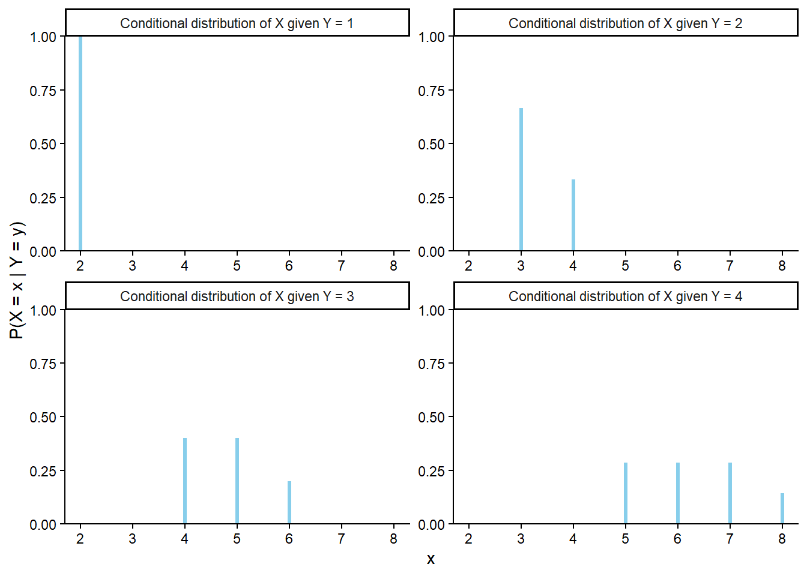
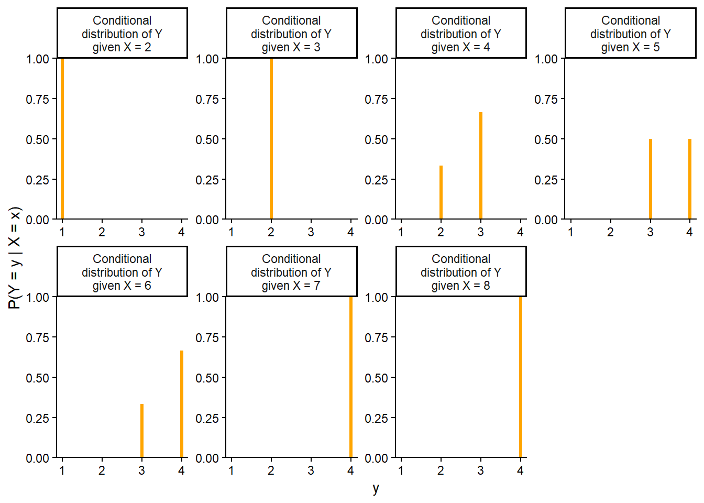
We can also depict families of conditional distributions in mosaic plots; see Figure 2.26. A mosaic plot represents a family of conditional distributions where color represents the possible values of one variable and area represents probability.
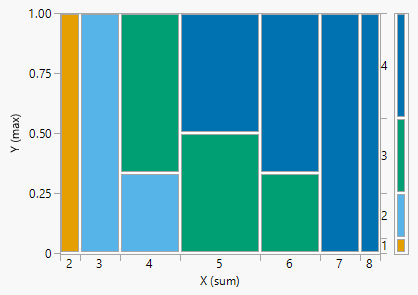
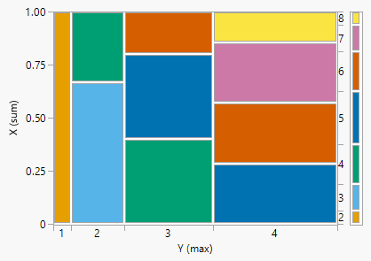
Each conditional distribution is a distribution, so we can summarize its characteristics, such as expected value. The value in part 1 of Example 2.60 is the conditional expected value of \(X\) given \(Y=4\), denoted \(\textrm{E}(X|Y=4)\). The conditional expected value of \(Y\) given \(X=x\) represents the long run average of values of \(Y\) over only \((X, Y)\) pairs with \(X=x\). Since each value of \(x\) typically corresponds to a different conditional distribution of \(Y\) given \(X=x\), the conditional expected value will typically be a function of \(x\).
We will explore conditioning in more detail throughout the book, including conditional distributions when continuous random variables are involved. We will also see how to use conditioning as a problem-solving tool.
2.6.9 Exercises
Exercise 2.17 Each question on a multiple choice test has four options. You know with certainty the correct answers to 70% of the questions. For 20% of the questions, you can eliminate two of the incorrect choices with certainty, but you guess at random among the remaining two options. For the remaining 10% of questions, you have no idea and guess one of the four options at random.
Randomly select a question from this test. What is the probability that you answer the question correctly?
- Construct an appropriate twoway table and use it to find the probability of interest.
- For any given question on the exam, your probability of answering it correctly is either 1, 0.5, or 0.25, depending on if you know it, can eliminate two choices, or are just guessing. How does your probability of correcting answering a randomly selected question relate to these three values? Which value — 1, 0.5, or 0.25 —is the overall probability closest to, and why?
Exercise 2.18 Imagine a light that flashes every few seconds51. The light randomly flashes green with probability 0.75 and red with probability 0.25, independently from flash to flash.
- Write down a sequence of G’s (for green) and R’s (for red) to predict the colors for the next 40 flashes of this light. Before you read on, please take a minute to think about how you would generate such a sequence yourself.
- Most people produce a sequence that has 30 G’s and 10 R’s, or close to those proportions, because they are trying to generate a sequence for which each outcome has a 75% chance for G and a 25% chance for R. That is, they use a strategy in which they predict G with probability 0.75, and R with probability 0.25. How well does this strategy do? Compute the probability of correctly predicting any single item in the sequence using this strategy.
- Describe a better strategy. (Hint: can you find a strategy for which the probability of correctly predicting any single flash is 0.75?)
Exercise 2.19 The ELISA test for HIV was widely used in the mid-1990s for screening blood donations. As with most medical diagnostic tests, the ELISA test is not perfect. If a person actually carries the HIV virus, experts estimate that this test gives a positive result 97.7% of the time. (This number is called the sensitivity of the test.) If a person does not carry the HIV virus, ELISA gives a negative (correct) result 92.6% of the time (the specificity of the test). Estimates at the time were that 0.5% of the American public carried the HIV virus.
Suppose that a randomly selected American tests positive; we are interested in the conditional probability that the person actually carries the virus.
- Before proceeding, make a guess for the probability in question.
- Denote the probabilities provided in the setup using proper notation
- Construct an appropriate two-way table and use it to compute the probability of interest.
- Construct a Bayes table and use it to compute the probability of interest.
- Explain why this probability is small, compared to the sensitivity and specificity.
- By what factor has the probability of carrying HIV increased, given a positive test result, as compared to before the test?
- Now suppose that 5% of individuals in a high-risk group carry the HIV virus. Consider a randomly selectd person from this group who takes the test. Given that the test is positive, how many times more likely is it for the person not to have HIV than to have it? Answer without first computing a two-way or Bayes table.
- Using the result from the previous part, compute the conditional probability that a person in this risk group who tests positive has HIV.
- Is the posterior probability influenced by the prior probability? Discuss.
Exercise 2.20 Consider three tennis players A, B, and C52. One of these players is better than the other two, who are equally good/bad. When the best player plays either of the others, she has a 2/3 probability of winning the match. When the other two players play each other, each has a 1/2 probability of winning the match. But you do not know which player is the best. Based on watching the players warm up, you start with subjective probabilities of 0.5 that A is the best, 0.35 that B is the best, and 0.15 that C is the best. (Note: the fact that these are subjective probabilities doesn’t change at all how you would solve the problems.) A and B will play the first match.
- Suppose that A beats B in the first match. Compute your posterior probability that each of A, B, C is best given that A beats B in the first match.
- Compare the posterior probabilities from the previous part to the prior probabilities. Explain how your probabilities changed, and why that makes sense.
- Suppose instead that B beats A in the first match. Compute your posterior probability that each of A, B, C is best given that B beats A in the first match.
- Compare the posterior probabilities from the previous part to the prior probabilities. Explain how your probabilities changed, and why that makes sense.
- Now suppose again that A beats B in the first match, and also that A beats C in the second match.
- Compute your posterior probability that each of A, B, C is best given the results of the first two matches. (Hint: use as the prior your posterior probabilities from the previous part.) Explain how your probabilities changed, and why that makes sense.
Exercise 2.21 Continuing Exercise 2.20. Suppose A will play B in the first match.
- Before any matches, if you had to choose the one player you think is best, who would you choose? What is your subjective probability that your choice is correct? (This should be a short answer, not requiring any calculations. The main reason to think about this is to compare to the last part.)
- Compute your subjective probability that A will beat B in the first match.
- If A beats B in the first match, you will update your subjective probabilities so they are: 0.6349 that A is the best, 0.2222 that B is the best, and 0.1429 that C is the best. (See Exercise 2.20.) Suppose that A beats B in the first match. If you had to choose the one player you think is best based on your updated subjective probabilities, who would you choose? What is your subjective probability that your choice is correct given that A beats B in the first match?
- If B beats A in the first match, you will update your subjective probabilities so they are: 0.3509 that A is the best, 0.4912 that B is the best, and 0.1579 that C is the best. (See Exercise 2.20.) Suppose that B beats A in the first match. If you had to choose the one player you think is best based on your updated subjective probabilities, who would you choose? What is your subjective probability that your choice is correct given that B beats A in the first match?
- After the first match you make your choice of who you think is the best player. Compute your subjective probability that your choice is correct. (Hint: this should be a single number, but you need to consider the two cases.) Compare to the first part; what is the “value” of observing the winner of the first match?
Exercise 2.22 Continuing Exercise 2.16.
The latest series of collectible Lego Minifigures contains 3 different Minifigure prizes (labeled 1, 2, 3). Each package contains a single unknown prize. Suppose we only buy 3 packages and we consider as our sample space outcome the results of just these 3 packages (prize in package 1, prize in package 2, prize in package 3). For example, 323 (or (3, 2, 3)) represents prize 3 in the first package, prize 2 in the second package, prize 3 in the third package. Let \(X\) be the number of distinct prizes obtained in these 3 packages. Let \(Y\) be the number of these 3 packages that contain prize 1. Suppose that each package is equally likely to contain any of the 3 prizes, regardless of the contents of other packages. There are 27 possible, equally likely outcomes
- Find the conditional distribution of \(Y\) given \(X=x\) for each possible value of \(x\) of \(X\).
- Compute and interpret \(\text{E}(Y|X=x)\) for each possible value of \(x\) of \(X\).
- Find the conditional distribution of \(X\) given \(Y=y\) for each possible value of \(y\) of \(Y\).
- Compute and interpret \(\text{E}(X|Y=y)\) for each possible value of \(y\) of \(Y\).
2.7 Independence
We revise probabilities of events and distributions of random variables when new information becomes available. In this section we investigate situations where conditioning on information does not change probabilities or distributions.
2.7.1 Independence of two events
In general, the conditional probability of event \(A\) given some other event \(B\) is usually different from the unconditional probability of \(A\); that is, in general \(\textrm{P}(A | B) \neq \textrm{P}(A)\). Knowledge of the occurrence of event \(B\) typically influences the probability of event \(A\), and vice versa. If so, we say that events \(A\) and \(B\) are dependent.
However, in some situations knowledge of the occurrence of one event does not influence the probability of another. For example, if a coin is flipped twice then knowing that the first flip landed on heads does not change the probability that the second flips lands on heads. In such situations we say the events are independent.
Definition 2.8 For a probability space with probability measure \(\textrm{P}\), two events \(A\) and \(B\) are53 independent if \(\textrm{P}(A \cap B) = \textrm{P}(A)\textrm{P}(B)\).
In general, the multiplication rule says \[\begin{align*} \textrm{P}(A \cap B) & = \textrm{P}(A|B)\textrm{P}(B)\\ \text{Joint} & = \text{Conditional}\times\text{Marginal} \end{align*}\] For independent events, the multiplication rule simplifies \[\begin{align*} \text{If $A$ and $B$ are independent then } && \textrm{P}(A \cap B) & = \textrm{P}(A)\textrm{P}(B)\\ \text{If independent then } && \text{Joint} & = \text{Product of Marginals} \end{align*}\]
2.7.2 Interpreting independence
Intuitively, events \(A\) and \(B\) are independent if the knowing whether or not one occurs does not change the probability of the other. The following lemma54 formalizes this idea.
Lemma 2.9 (Equivalent conditions for independence of two events) For a probability space with probability measure \(\textrm{P}\) the following statements are equivalent55 for events \(A\) and \(B\) (with \(0<\textrm{P}(A)<1\) and \(0<\textrm{P}(B)<1\)).
\[\begin{align*} \text{$A$ and $B$} & \text{ are independent} & &\\ \textrm{P}(A \cap B) & = \textrm{P}(A)\textrm{P}(B) & & \\ \textrm{P}(A|B) & = \textrm{P}(A) & & \\ \textrm{P}(A|B) & = \textrm{P}(A|B^c) & & \\ \textrm{P}(B|A) & = \textrm{P}(B) & & \\ \textrm{P}(B|A) & = \textrm{P}(B|A^c) & &\\ \textrm{P}(A^c \cap B) & = \textrm{P}(A^c)\textrm{P}(B) & & \text{that is, $A^c$ and $B$ are independent}\\ \textrm{P}(A \cap B^c) & = \textrm{P}(A)\textrm{P}(B^c) & & \text{that is, $A$ and $B^c$ are independent}\\ \textrm{P}(A^c \cap B^c) & = \textrm{P}(A^c)\textrm{P}(B^c) & & \text{that is, $A^c$ and $B^c$ are independent} \end{align*}\]
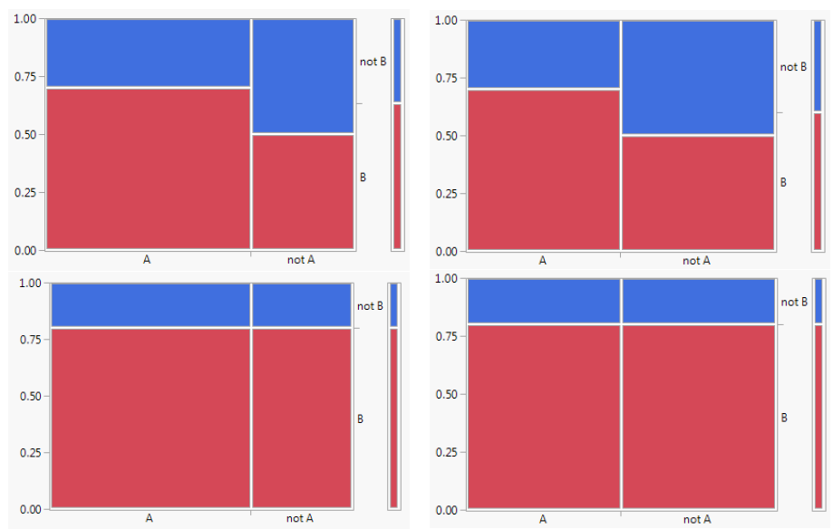
Independence concerns whether or not the occurrence of one event affects the probability of the other. Conditioning involves slicing and renormalizing; independence concerns whether the renormalized slice matches the original picture. Given two events it is not always obvious whether or not they are independent. When there is any doubt, be sure to check directly if one of the equivalent conditions for independence is true (that is, the directly compute the left side and right side and see if they’re equal).
2.7.3 Independence is an assumption
Independence is often a reasonable assumption based on the physical properties of the random phenomenon. But remember that it is an assumption, which might or might not match reality.
Remember, independence is a statement about probabilities, not outcomes themselves. Given two events it is not always obvious whether or not they are independent.
Independence is determined by the probability measure. Events that are independent under one probability measure might not be independent under another. The probability measure represents all the assumptions about the random phenomenon. We often incorporate independence assumptions when specifying the probability measure. However, whether or not independence is a valid assumption depends on the underlying random phenomenon.
Be sure to make a distinction between assumption and observation. For example, flip a coin some number of times. It might be reasonable to assume the coin is fair and flips are independent. In this case, the probability that the next flip lands on heads is 1/2 regardless of what you observed on the previous flips. However, if you flip a coin twenty times and it lands on heads each time, this might cast doubt on your assumption that the coin is fair.
2.7.4 Independence of multiple events
Events \(A_1, A_2, A_3, \ldots\) are independent if:
- any pair of events \(A_i, A_j, (i \neq j)\) satisfies \(\textrm{P}(A_i\cap A_j)=\textrm{P}(A_i)\textrm{P}(A_j)\),
- and any triple of events \(A_i, A_j, A_k\) (distinct \(i,j,k\)) satisfies \(\textrm{P}(A_i\cap A_j\cap A_k)=\textrm{P}(A_i)\textrm{P}(A_j)\textrm{P}(A_k)\),
- and any quadruple of events \(A_i, A_j, A_k, A_\ell\) (distinct \(i,j,k,\ell\)) satisfies \(\textrm{P}(A_i\cap A_j\cap A_k \cap A_\ell)=\textrm{P}(A_i)\textrm{P}(A_j)\textrm{P}(A_k)\textrm{P}(A_\ell)\),
- and so on.
Intuitively, a collection of events is independent if knowing whether or not any combination of the events in the collection occur does not change the probability of any other event in the collection.
In particular, three events \(A\), \(B\), \(C\) are independent if and only if all of the following are true \[ \scriptsize{ \textrm{P}(A\cap B) = \textrm{P}(A)\textrm{P}(B), \quad \textrm{P}(A\cap C) = \textrm{P}(A)\textrm{P}(C),\quad \textrm{P}(B\cap C) = \textrm{P}(B)\textrm{P}(C),\quad \textrm{P}(A\cap B\cap C) = \textrm{P}(A)\textrm{P}(B)\textrm{P}(C) } \]
Equivalently, it can be shown that three events \(A\), \(B\), \(C\) are independent if and only if all of the following56 are true.
\[\begin{align*} & \textrm{P}(A| B) = \textrm{P}(A), \quad \textrm{P}(A| C) = \textrm{P}(A), \quad \textrm{P}(B|A) = \textrm{P}(B), \quad \textrm{P}(B| C) = \textrm{P}(B), \quad \textrm{P}(C|A) = \textrm{P}(C),\\ & \textrm{P}(C|B) = \textrm{P}(C), \quad \textrm{P}(A| B\cap C) = \textrm{P}(A), \quad \textrm{P}(B|A\cap C) = \textrm{P}(B), \quad \textrm{P}(C|A\cap B) = \textrm{P}(C) \end{align*}\]
2.7.5 Independence of random variables
We have focused on independence of events, but random variables can also be independent.
Two random variables are independent if any event involving one of the random variables is independent of any event involving the other. Roughly, two random variables are independent if knowing the value of one does not change the distribution of the other.
Roughly, two random variables \(X\) and \(Y\) are independent if and only if:
- Their joint distribution is the product of their marginal distributions
- The conditional distribution of \(X\) given the value of \(Y\) is equal to the marginal distribution of \(X\).
- The conditional distribution of \(Y\) given the value of \(X\) is equal to the marginal distribution of \(Y\).
Figure 2.28 displays mosaic plots of the distributions of the two independent discrete random variables of Example 2.68. Notice that the conditional distribution of \(X\) is the same for each value of \(Y\), and vice versa.
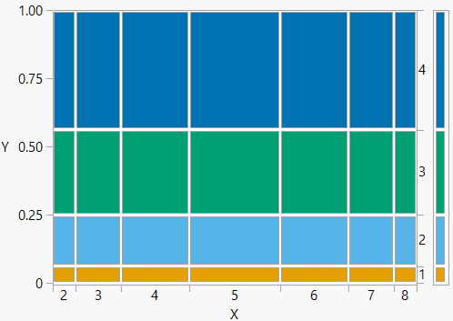
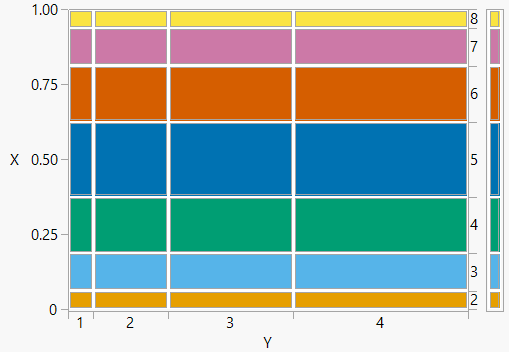
2.7.6 Using independence
Remember the general multiplication rule involves successive conditional probabilities \[ \textrm{P}(A_1\cap A_2 \cap A_3 \cap A_4 \cap \cdots) = \textrm{P}(A_1)\textrm{P}(A_2|A_1)\textrm{P}(A_3|A_1\cap A_2)\textrm{P}(A_4|A_1\cap A_2 \cap A_4)\cdots \] In problems with complicated relationships, determining joint and conditional probabilities can be difficult.
But when events are independent, the multiplication rule simplifies greatly. \[ \textrm{P}(A_1 \cap A_2 \cap A_3 \cap \cdots) = \textrm{P}(A_1)\textrm{P}(A_2)\textrm{P}(A_3)\cdots \quad \text{if $A_1, A_2, A_3, \ldots$ are independent} \]
When a problem involves independence, you will want to take advantage of it. Work with “and” events whenever possible in order to use the multiplication rule. For example, for problems involving “at least one” (an “or” event) take the complement to obtain “none” (an “and” event).
The complement rule is often useful in probability problems that involve finding “the probability of at least one…,” which on the surface involves unions (OR). It usually more convenient to use the complement rule and compute “the probability of at least one…” as one minus “the probability of none…”; the latter probability involves intersections (AND). Don’t forget to actually use the complement rule to get back to the original probability of interest!
2.7.7 Exercises
Exercise 2.24 Maya is a basketball player who makes 40% of her three point field goal attempts. Suppose that at the end of every practice session, she attempts three pointers until she makes one and then stops. Let \(X\) be the total number of shots she attempts in a practice session. Assume shot attempts are independent, each with probability of 0.4 of being successful.
- What are the possible values that \(X\) can take? Is \(X\) discrete or continuous?
- Compute and interpret \(\text{P}(X=1)\).
- Compute and interpret \(\text{P}(X=2)\).
- Compute and interpret \(\text{P}(X=3)\).
- Compute \(\text{P}(X>3)\) without summing the values from the previous parts. Hint: what needs to be true about the first 3 attempts for \(X > 3\)?
Exercise 2.25 A very large petri dish starts with a single microorganism. After one minute, the microorganism either splits into two with probability \(s\), or dies. All subsequent microorganisms behave in the same way — splitting into two or dying after each minute — independently of each other.
- If \(s=3/4\), what is the probability that the population eventually goes extinct? (Hint: condition on the first step.)
- Compute the probability that the population eventually goes extinct as a function of \(s\). For what values of \(s\) is the extinction probability 1?
Exercise 2.27 Consider a “best-of-5” series of games between two teams: games are played until one of the teams has won 3 games (requiring at most 5 games total). Suppose one team, team A, is better than the other, having a 0.55 probability of winning any particular game. Assume the results of the games are independent (and ignore advantage, etc). Let \(X\) represent the number of games played in the series. Hint: It’s helpful to first construct a two-way table of probabilities with the number of games played and which team wins, and then use it to answer the following questions. It will also help to list some outcomes, like AABA (team A wins game 1, 2, and 4, and B wins game 3).
- Compute the probability that team A wins the series in 3 games.
- Compute the probability that the series ends in 3 games.
- Compute the probability that team A wins the series.
- Are the events “team A wins the series” and “the series ends in 3 games” independent? Explain by comparing relevant probabilities.
- Let \(X\) represent the number of games played in the series. Find the distribution of \(X\).
Exercise 2.26 Continuing Exercise 2.20. Now we’ll consider multiple matches. Assume that the results of matches are conditionally independent given the best player.
- Suppose that A beats B in the first match, and also that A beats C in the second match. Construct a Bayes table to compute your posterior probability that each of A, B, C is best given the results of the first two matches. Use as the prior your posterior probabilities from part 1 of Exercise 2.20. Explain how your probabilities changed, and why that makes sense.
- Now suppose that after A beats B in the first match and A beats C in the second match, then B beats C in the third match. Construct a Bayes table to compute your posterior probability that each of A, B, C is best given the results of the first three matches. Use as the prior your posterior probabilities from the previous part. Explain how your probabilities changed, and why that makes sense.
- In the previous parts we updated posterior probabilities after each match. What if we waited until the results of all three matches? Construct a Bayes table to find your posterior probability that each of A, B, C is best given the results of the first three matches (A beats B, A beats C, B beats C). Use your original prior probabilities from Exercise 2.20 (0.5 for A, 0.35 for B, 0.15 for C). The likelihood should now reflect the results of the three matches.
2.8 Chapter exercises
Why four-sided? Simply to make the number of possibilities a little more manageable. Rolling a four-sided die twice yields 16 possible pairs, while rolling a six-sided die yields 36 possible pairs.↩︎
There is no one set of universally agreed on notation, but \(\Omega\) is commonly used. It is also common practice to use uppercase and lowercase letters to denote different objects, like \(\Omega\) versus \(\omega\).↩︎
We could have written the sample space as the Cartesian product \(\Omega = \{1, 2, 3, 4\} \times\{1, 2, 3, 4\}\), where the first \(\{1, 2, 3, 4\}\) set in the product represents the result of the first roll (and similarly for the second). But this Cartesian product still represents a single set of ordered pairs, and it is that single set which is the sample space corresponding to outcomes of the pair of rolls.↩︎
Why have we started with [0, 1] and not some other continuous interval? Because probabilities take values in \([0, 1]\). We will see why this is useful in more detail later.↩︎
Mathematically we can write the sample space as \([0,60]\times [0,60]=[0,60]^2\), the Cartesian product \(\{(x, y): x \in [0, 60], y \in [0, 60]\}\), the set of ordered pairs whose components take values in \([0, 60]\).↩︎
We could also try \([0, m]\) where \(m\) is some large dollar amount providing an upper bound on the maximum possible salary. But we would need to be sure that \(m\) is large enough so that all possible outcomes are in the sample space \([0, m]\). Without knowing this bound in advance, it is convenient to just choose the unbounded interval \([0, \infty)\). There is really no harm in making the sample space bigger than it needs to be, but you can run into problems if you make it too small.↩︎
Mathematically this sample space can be written as \(\Omega=\{1, 2, 3\}^\infty\).↩︎
Technically, \(\mathcal{F}\) is a \(\sigma\)-field of subsets of \(\Omega\): \(\mathcal{F}\) contains \(\Omega\) and is closed under countably many elementary set operations (complements, unions, intersections). This requirement ensures that if \(A\) and \(B\) are “events of interest”, then so are \(A\cup B\), \(A\cap B\), and \(A^c\). While this level of technical detail is not needed, we prefer to introduce the idea of a “collection of events” now since a probability measure is a function whose input is an event (set) rather than an outcome (point).↩︎
A \(d\)-dimensional random vector \(V\) maps sample space outcomes to \(d\)-dimensional vectors, \(V:\Omega \mapsto \mathbb{R}^d\). The output of a random vector is a vector (or tuple) of numbers.↩︎
Throughout, we use \(g\) to denote a generic function, and reserve \(f\) to represent a probability density function (which we will encounter later). Likewise, we represent a generic function argument (or “dummy variable”) with \(u\), since \(x\) is often used to represent possible values of a random variable \(X\). In the context of a random variable, \(x\) typically represents the output of the function \(X\) rather than the input (which is a sample space outcome \(\omega\).)↩︎
In Example 2.17 sample space outcomes are pairs of rolls. If we denote a generic outcome as \(\omega = (\omega_1, \omega_2)\) then \(X(\omega) = X((\omega_1, \omega_2)) = \omega_1 + \omega_1\). Similarly, \(Y(\omega) = Y((\omega_1, \omega_2)) = \max(\omega_1, \omega_2)\). But we don’t need this level of technical detail; defining \(X\) and \(Y\) in words is sufficient.↩︎
\(Y(\omega) = g(X(\omega))\) so \(Y\) maps \(\Omega\) to \(\mathbb{R}\) via the composition of the functions \(g\) and \(X\); that is, \(Y=g\circ X\) where \((g\circ X):\Omega\mapsto \mathbb{R}\)↩︎
Orange you glad I didn’t say banana?↩︎
See the inclusion-exclusion principle↩︎
And \(\{X = 3\}\) itself is short for \(\{\omega\in\Omega:X(\omega) = x\}\).↩︎
A probability measure is a set function; its input is a set and its output is a number.↩︎
It’s the number of events that must be countable. The events themselves can be uncountable sets like intervals.↩︎
That the probability of each outcome must be 1/4 when there are four equally likely outcomes follows from the axioms, by writing \(\{1, 2, 3, 4\} = \{1\}\cup\{2\}\cup \{3\}\cup \{4\}\), a union of disjoint sets, and applying countable additivity and \(\textrm{P}(\Omega)=1\). But we don’t need this level of technical detail; our intuition tells us the probability of each four equally likely outcomes is 1/4.↩︎
Probabilities are always defined for events (sets). When we say loosely “the probability of an outcome \(\omega\)” we really mean the probability of the event \(\{\omega\}\) consisting of the single outcome \(\omega\). In this example \(\textrm{P}(\{1\})=\textrm{P}(\{2\})=\textrm{P}(\{3\})=\textrm{P}(\{4\})=1/4\).↩︎
\(\Omega = \{1, 2, 3\} \cup \{4\}\), a union of disjoint events, so \(1 = \textrm{Q}(\Omega) = \textrm{Q}(\{1, 2, 3\}) + \textrm{Q}(\{4\})\).↩︎
Because he’s solo.↩︎
It doesn’t really matter if we round or truncate to the nearest minute, but we’re truncating so we don’t treat 0 differently than the other values (technically only times in the first 30 seconds, not minute, round to 0).↩︎
This is one reason why probabilities are defined directly for events and not outcomes.↩︎
Proof. Since \(\Omega = A \cup A^c\) and \(A\) and \(A^c\) are disjoint the axioms imply that \(1=\textrm{P}(\Omega) = \textrm{P}(A \cup A^c) = \textrm{P}(A) + \textrm{P}(A^c)\).↩︎
Proof. If \(A \subseteq B\) then \(B = A \cup (B \cap A^c)\). Since \(A\) and \((B \cap A^c)\) are disjoint, \(\textrm{P}(B) = \textrm{P}(A) + \textrm{P}(B \cap A^c) \ge \textrm{P}(A)\).↩︎
The proof is easiest to see by considering a picture like the one in Figure 2.8).↩︎
\(A = A\cap \Omega = A\cap(C_1 \cup C_2 \cup \cdots) = (A\cap C_1)\cup(A\cap C_2)\cup \cdots\). The \(A\cap C_i\)’s are disjoint since the \(C_i\)’s are, and the result follows from countable additivity.↩︎
In this example it is logically possible for \(\textrm{P}(C \cap D)\) to be 0, but that’s not always true. For example, if \(\textrm{P}(A) = 0.9\) and \(\textrm{P}(B) = 0.8\), then \(\textrm{P}(A \cap B)\) must be at least 0.7 so that \(\textrm{P}(A \cup B)\le 1\).↩︎
A probability space is usually defined as a triple \((\Omega, \mathcal{F}, \textrm{P})\), where \(\Omega\) is the sample space, \(\mathcal{F}\) is a \(\sigma\)-field of subsets of \(\Omega\) representing the collection of events of interest, and \(\textrm{P}\) is a probability measure. Given that many events of interest involve random variables, we also include random variables in the model.↩︎
The values in this problem are based on a April, 2021 report by the Pew Research Center.↩︎
Based on data from the U.S. Census Bureau↩︎
We generally encourage you to use two-way tables of whole number counts, but we’re using probabilities here to motivate the definition of conditional probability.↩︎
We have seen that “equals to” events involving continuous random variables have probability 0. We will discuss some issues related to conditioning on the value of a continuous random variable later.↩︎
The value only differs from the 0.24 in Example 2.46 due to rounding.↩︎
The value only differs from the 0.5417 in Example 2.46 due to rounding.↩︎
In computing these probabilities we have unconsciously applied “Bayes rule”, which we will discuss in more detail later.↩︎
You should really check about this birthday problem demo from The Pudding.↩︎
Which isn’t quite true. However, a non-uniform distribution of birthdays only increases the probability that at least two people have the same birthday. To see that, think of an extreme case like if everyone were born in September.↩︎
Sometimes students mistake this for \((1/365)^2\), but \((1/365)^2\) would be the probability that person 1 and person 2 both have a particular birthday, like the probability that both are born on January 1. There are \(365^2\) possible (person 1, person 2) birthday pairs, of which 365 — (Jan 1, Jan 1), (Jan 2, Jan 2), etc — result in the same birthday, so the probability of sharing a birthday is \(365/365^2 = 1/365\).↩︎
Proof: start with Lemma 2.5 and use the multiplication rule to write \(\textrm{P}(A \cap C_1)=\textrm{P}(A|C_1)\textrm{P}(C_1)\), etc.↩︎
They should be exactly the same; any differences are due to rounding.↩︎
This section only covers Bayes’ rule for events. We’ll see Bayes’ rule for distributions of random variables later. But the ideas are analogous.↩︎
We’re using “hypothesis” in the sense of a general scientific hypothesis, not necessarily a statistical null or alternative hypothesis.↩︎
The symbol \(\propto\) means “is proportional to”.↩︎
Wouldn’t it also be a mistake to not consider other animals like cow? Yes, but that’s also a mistake about prior probabilities. If you forget to include an animal like cow then you’re assigning it a prior probability of 0, so its posterior probability will automatically be 0 regardless of the likelihood.↩︎
You still might be thinking: what about cows? Or dogs? Or moose? Or horses? Cows would have a high prior probability, and they are often very large, hair, and black. So it depends on how likely it is for a cow to be running. Depending on the prior probabilities and likelihoods, a cow—or dog or moose or horse—might end up with an even higher posterior probability than a bear. In any case, the point is that a gorilla should have a posterior probability of basically 0. “Tt’s a gorilla” was not a great initial proclamation, but maybe “it’s probably just a cow (or dog/moose/horse)” would have been a fine conclusion.↩︎
Conditioning on event \(E\) can also be viewed as a restiction of the sample sample from \(\Omega\) to \(E\). However, we prefer to keep the sample space as \(\Omega\) and only view conditioning as a change in probability measure. In this way, we can consider conditioning on various events as representing different probability measures all defined for the same collection of events corresponding to the same sample space.↩︎
Remember: probabilities are assigned to events, so we are speaking loosely when we say probabilities of outcomes.↩︎
Thanks to Allan Rossman for this example.↩︎
Please replace A, B, and C with your favorite names. Possible choices: Ahsoka, Boba, Cassian. Ant-Man, Black Panther, Captain America. Arthur Ashe, Bjorn Borg, Chris Evert.↩︎
Technically, we should say “\(\textrm{P}\)-independent”; see Section 2.7.3↩︎
The proof follows from the definitions of independence and conditional probability and properties of a probability measure. For example, \(\textrm{P}(A) = \textrm{P}(A\cap B) + \textrm{P}(A \cap B^c)\) so \(\textrm{P}(A \cap B^c) = \textrm{P}(A) - \textrm{P}(A \cap B)\). If \(A\) and \(B\) are independent then \(\textrm{P}(A \cap B^c) = \textrm{P}(A) - \textrm{P}(A)\textrm{P}(B) = \textrm{P}(A)(1-\textrm{P}(B)) = \textrm{P}(A)\textrm{P}(B^c)\), so \(A\) and \(B^c\) are independent.↩︎
That is, if one statement is true then they all are true; if one statement is false, then they all are false.↩︎
Some of these conditions are redundant. For example, \(\textrm{P}(A|B)=\textrm{P}(A)\) if and only if \(\textrm{P}(B|A)=\textrm{P}(B)\) so technically only one of those conditions needs to be verified.↩︎